Solidon3D
Handbuch
Konstruieren, Erzeugen und Bearbeiten für den 3D-Druck
Version 0.0.1
Copyright © 2026 RS Digital
Handbuch
34 Kapitel — von den ersten fünfzehn Minuten bis zur Referenz jeder Operation, erzeugt aus derselben Quelle wie das Handbuch in der Anwendung.
Was Solidon ist
Solidon baut, ändert und druckreif macht — Modelle für den 3D-Drucker.
Drei Dinge unterscheiden es von dem, was sonst offen ist:
- Jeder Schritt bleibt eine Zahl. Eine Bohrung, die zwei Millimeter danebensitzt, wird verschoben und nicht neu gebohrt.
- Passungen kommen aus dem Material, nicht aus dem Gefühl. Wer sein Spiel einmal misst, verbessert damit auch Teile, die er vorher gebaut hat.
- Bausteine statt Handarbeit. Mutternfalle, Heat-Set-Buchse, Rastnase, Filmscharnier, Magnettasche — je ein Klick statt je einer halben Stunde.
Skizzen gehören dazu: Grundformen und selbst Gezeichnetes mit Zwangsbedingungen — extrudiert, getascht, rotiert oder entlang eines Bogens geführt, und jedes Maß darf ein Projektparameter sein.
Was es nicht ist: kein Slicer — die Druckdatei kommt weiter aus dem Slicer, Solidon sucht und bewertet nur. Keine Cloud — kein Konto, keine Telemetrie, nichts, was den Rechner verlässt.
Ohne Netz, ohne Konto und ohne Sprachmodell bleibt alles außer dem Chat benutzbar.
Die ersten fünfzehn Minuten
Wer noch nie mit einem Konstruktionsprogramm gearbeitet hat, fängt hier an. Ein heruntergeladenes Modell bekommt ein Loch und geht danach in den Slicer — der häufigste aller Fälle, in acht Schritten.
1. Beim ersten Start drei Fragen beantworten. Sprache, Drucker, Material. Steht der eigene Drucker nicht dabei, tut es ein ähnlicher — die Maße lassen sich später ändern. Später einstellen geht auch, dann gelten Vorgaben.
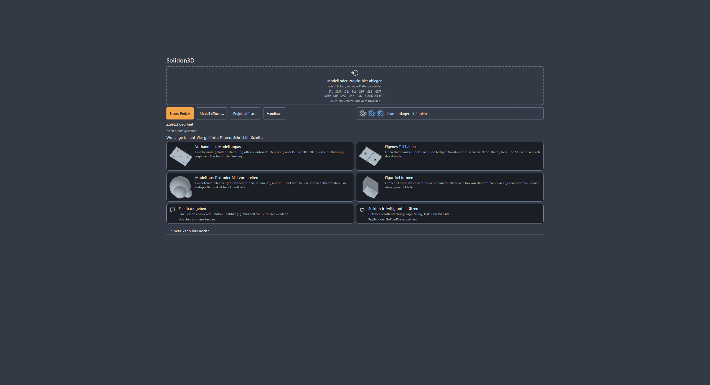
2. Eine Datei auf das Fenster ziehen. STL, 3MF, OBJ, GLB, PLY, OFF und STEP; dazu SVG und DXF für Zeichnungen, die extrudiert werden sollen. Ist in der Datei keine Einheit vermerkt — bei STL nie —, fragt Solidon nach, statt zu raten. Im Zweifel Millimeter: fast alles im Netz ist in Millimetern.
3. In den Prüfbericht schauen. Rechts steht, was mit dem Modell nicht stimmt. Löcher, doppelte Flächen, verkehrt herum liegende Dreiecke — bei heruntergeladenen Modellen ist das die Regel, nicht die Ausnahme. Jeder Befund hat eine Schaltfläche, die ihn behebt.
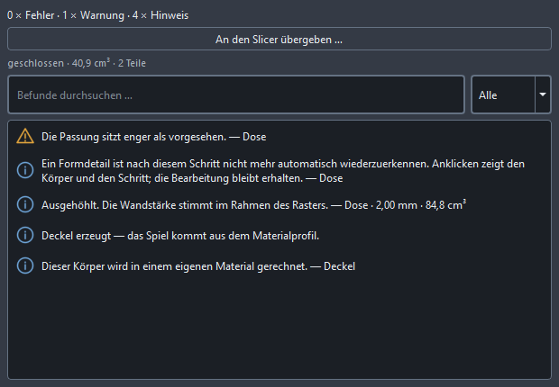
4. Reparieren. Meist genügt die vorgeschlagene Handlung im Bericht. Das Modell bleibt dabei, was es war — die Reparatur ist ein Schritt im Verlauf und lässt sich zurücknehmen.
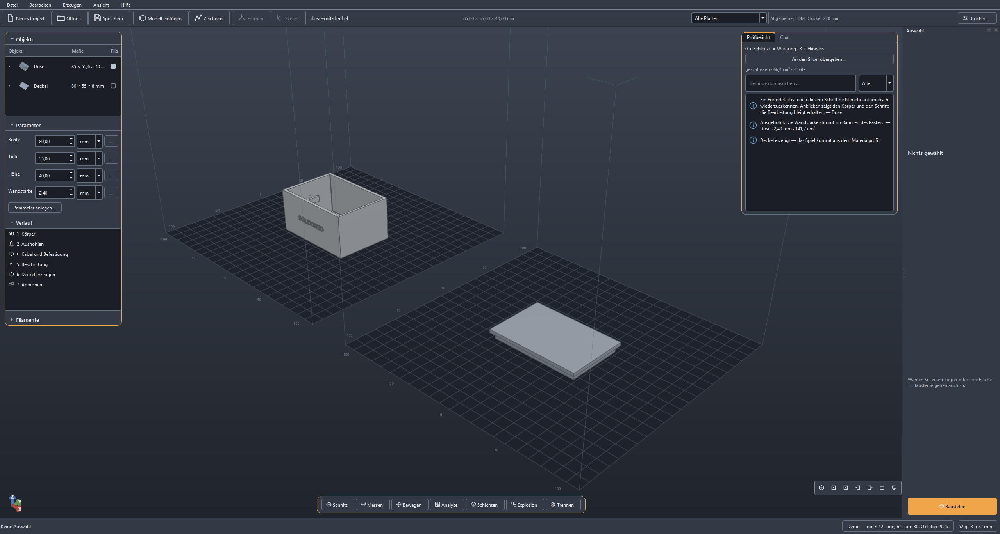
5. Die Fläche anklicken, in die das Loch soll. Sie hebt sich hervor. Ein Rechtsklick zeigt genau die Operationen, die auf diese Fläche passen — bei einer ebenen Fläche zum Beispiel Bohrung setzen.
6. Den Durchmesser eintragen und übernehmen. Ort und Richtung stehen schon da, weil die Fläche ausgewählt war. Alles Weitere — Toleranz, Auflösung — liegt hinter Weitere Einstellungen und bleibt in aller Regel unberührt.
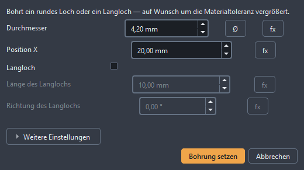
Das Ergebnis: derselbe Körper, ein Loch mehr.
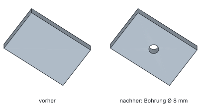
7. Sitzt das Loch falsch, wird es verschoben, nicht neu gebohrt. Ein Doppelklick auf den Schritt im Verlauf öffnet ihn wieder. Zahl ändern, übernehmen, fertig. Das gilt auch noch nächste Woche.
8. Exportieren. Datei → Exportieren, dann 3MF, wenn der Slicer es kann — sonst STL. Diese Datei kommt in den Slicer, und der macht daraus den G-Code.
Mehr braucht der erste Durchgang nicht. Alles Übrige in diesem Handbuch ist Ausbau davon.
Das Fenster
Drei Zonen, und keine davon versteckt sich.
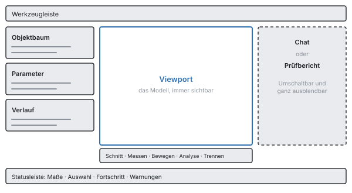
Links liegen Objektbaum, Parameter und Verlauf untereinander, jeder Abschnitt einklappbar. Der Objektbaum zeigt, was in der Szene steht; die Parameterliste die benannten Maße des Projekts; der Verlauf jeden Schritt, der zum aktuellen Stand geführt hat.
In der Mitte das Modell. Linke Maustaste wählt aus, rechte oder mittlere dreht, Umschalt und Ziehen schiebt, das Mausrad zoomt dorthin, wo der Zeiger steht. Wer es aus einem anderen Programm anders gewohnt ist, stellt in den Einstellungen auf CAD- oder Blender-Belegung um.
Rechts entweder der Chat oder der Prüfbericht — nie beides, weil beides gleichzeitig niemand liest. Entsteht eine Warnung, springt die Ansicht von selbst auf den Bericht. Ein Tastendruck blendet die ganze Spalte aus, dann ist das Modell im Vollbild.
Unten die Statusleiste: Maße des Ausgewählten, Fortschritt einer laufenden Rechnung, offene Warnungen.
Es gibt keine Betriebsarten. Kein Umschalten zwischen „Bearbeiten“ und „Konstruieren“, keine Werkbänke — es gibt einen Zustand, und das ist die Szene.
Wenn Sie etwas suchen, drücken Sie die Befehlspalette auf. Sie findet jede Operation über ihren Namen und zeigt das Tastenkürzel gleich daneben. So lernt man die Kürzel nebenbei, statt sie auswendig zu lernen.
Hinsehen, bevor gedruckt wird
Ein Modell sieht auf dem Bildschirm fast immer gut aus. Ob es sich drucken lässt, steht woanders — in der Wandstärke an der dünnsten Stelle, im Überhang über der Grenze, in der Insel, die in der Luft anfängt. Fünf Werkzeuge in der Leiste unter der Ansicht beantworten das, und keines davon ändert etwas am Modell.
Messen (Werkzeugleiste, Messen) legt zwei Punkte fest und zeigt den Abstand. Der Zeiger fängt dabei auf Ecken und Kanten, man muss also nicht treffen, sondern nur in die Nähe kommen. Für die Wandstärke genügt ein Klick auf eine Fläche: Solidon schickt einen Strahl nach innen und misst, wo er wieder herauskommt. Eine gemessene Strecke bleibt als Bemaßung stehen, bis Sie sie wegnehmen — so lassen sich drei Maße nebeneinander vergleichen, statt sie sich zu merken.
Der Schnitt (Schnitt) legt eine Ebene durch das Modell und zeigt, was dahinter liegt. Die Schnittfläche wird dabei geschlossen dargestellt, nicht als offenes Loch — ein Hohlraum ist damit als Hohlraum zu erkennen und nicht als Fehler in der Anzeige. Die Ebene lässt sich mit dem Regler durchziehen.
Die Analysekarten (Analyse) färben das Modell nach einer Zahl ein. Sieben gibt es: Wandstärke, Überhang, Stützbedarf und Krümmung beantworten die Frage nach der Druckbarkeit. Netzfehler zeigt offene Kanten und Stellen, an denen mehr als zwei Flächen zusammenstoßen — dort sitzt fast immer die Ursache, wenn eine Verknüpfung scheitert. Feature-Zuordnung färbt, was die Erkennung aus dem Körper gemacht hat: welche Fläche als Bohrung gilt, welche als Tasche. Passungen zeigt, welche Flächen an einer Passung beteiligt sind und welche davon verletzt ist. Die Legende nennt immer den Zahlenbereich und die Herkunft der Werte — eine Karte ohne Maßstab ist ein hübsches Bild. Ein Klick auf eine Warnung im Prüfbericht fährt die Kamera an die Stelle.
Die Schichtvorschau (Schichten) zeigt das Modell so, wie es in Schichten zerfällt. Der Regler fährt hindurch; was Sie sehen, ist Solidons eigene Schichtanalyse und nicht das, was der Slicer später rechnet. Beide Zahlenwelten bleiben getrennt ausgewiesen, damit niemand eine Schätzung für eine Messung hält.
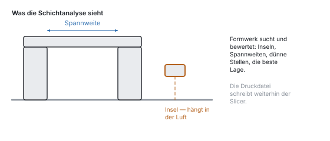
Die Explosionsansicht (Explosion) zieht mehrere Körper auseinander, damit man sieht, was ineinandergreift. Sie verschiebt nur die Anzeige — der Stapel und der Export bleiben unberührt.
Keines dieser Werkzeuge erzeugt eine Operation. Sie sind eine Brille, kein Werkzeug: Sie können nichts damit kaputt machen, und ein Undo hat hier nichts zurückzunehmen.
Bewegen und Bemalen
Zwei Werkzeuge derselben Leiste ändern das Modell wirklich: Bewegen und Bemalen. Beide halten das Versprechen des Verlaufs — jeder Zug und jeder Strich ist ein eigener Schritt, den Strg+Z einzeln zurücknimmt.
Bewegen schaltet den Griff im Bild ein, das Gizmo: drei Pfeile zum Verschieben, drei Ringe zum Drehen, ein Würfel zum gleichmäßigen Skalieren — beschriftet mit X, Y, Z und S. Beim Loslassen steht der Zug als Verschieben, Drehen oder Skalieren im Verlauf, mit Zahlen, die sich dort nachträglich ändern lassen wie jede andere. Rasterfang und Winkelfang runden jeden Zug auf den eingestellten Schritt — ein Millimeter und fünfzehn Grad sind die Vorgabe, null heißt: kein Einrasten.
Während des Zugs steht die Zahl über dem Bild. Wer sie genau will, tippt sie: die erste Ziffer übernimmt den Zug, die Eingabetaste wendet genau den getippten Wert an — ohne Einrasten, denn wer tippt, meint es exakt —, und Esc verwirft den Zug ganz.
Ist eine Fläche gewählt, sitzt der Griff auf der Fläche. Ein Zug an ihr versetzt die Fläche in ihrer Richtung, und die Nachbarwände wachsen mit (Fläche versetzen) — aus dem 20-mm-Klotz wird ein 25-mm-Klotz, keine verschobene Kiste. Was quer zur Fläche gezogen wird, verfällt: eine Fläche kennt nur vor und zurück.
Der Würfel skaliert gleichmäßig — für ein genaues Zielmaß gibt es Auf Maß bringen, für achsweises Verzerren den Dialog von Skalieren. Und wer zwei Teile aneinandersetzen will, zieht nicht pixelgenau, sondern nimmt An Merkmal ausrichten: Fläche auf Fläche, Bohrung auf Bohrung.
Bemalen macht Klicks zu Pinselstrichen. Pinsel scharf schalten, Slot und Radius wählen, auf das Modell klicken — das ändert Materialslots und damit das Modell, nicht bloß das Bild. Beim 3MF-Export wird daraus der Filamentwechsel für den Drucker. Der Kantenwinkel hält den Pinsel an Kanten an, damit eine Farbe nicht um die Ecke läuft; 180 Grad heißt: über alles hinweg.
Beides sieht der Verlauf genauso wie einen Menüeintrag: dieselben Operationen, dasselbe Undo, dieselbe Möglichkeit, es sich anders zu überlegen.
Die drei Wege
Fast jede Aufgabe geht einen von drei Wegen. Zu jedem liegt ein Beispielprojekt bereit — auf dem Startbildschirm, und jedes öffnet sich mit einer Tour: rechts steht Schritt für Schritt, was Sie ausprobieren sollten, und die Tour merkt selbst, wenn ein Schritt getan ist.
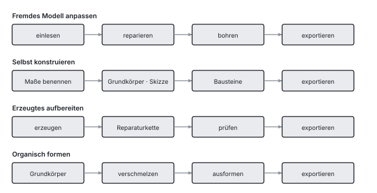
Weg 1 — ein fremdes Modell anpassen. Etwas heruntergeladen, es passt fast: einlesen, reparieren, bohren, exportieren. Der häufigste Weg, und der, bei dem die Reparatur zählt.
Weg 2 — selbst konstruieren. Aus Grundkörpern und Bausteinen etwas Neues, mit benannten Parametern: Breite, Tiefe, Stärke. Ändert sich eine Zahl, ändert sich das Teil.
Weg 3 — ein erzeugtes Modell aufbereiten. Was ein Bildmodell liefert, ist eine Oberfläche und keine Konstruktion. Sie kommt durch die Reparaturkette, und Bohrungen entstehen danach als eigene Schritte — nicht dadurch, dass man das Netz vermisst.
Der Verlauf
Jede Operation steht im Verlauf, und dort bleibt sie änderbar. Das ist der Unterschied, an dem alles Weitere hängt: ein Modell ist hier nicht ein Netz aus Dreiecken, sondern die Liste der Schritte, aus denen es entstanden ist.
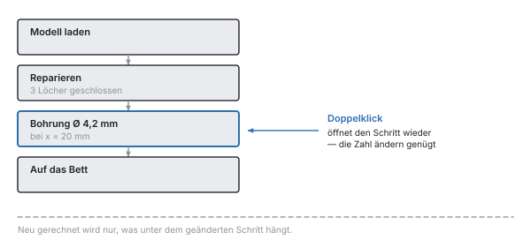
Doppelklick auf einen Schritt öffnet ihn wieder — mit den Werten, die in der Datei stehen. Wer eine Bohrung zwei Millimeter versetzen will, ändert die Zahl; neu gerechnet wird nur, was darunter hängt.
Rückgängig nimmt eine ganze Transaktion zurück, nicht einen halben Schritt. Ein Vorschlag des Chats ist genau eine Transaktion — ein Undo nimmt ihn vollständig zurück.
Zwei Grenzen sind Absicht. Zurückgenommene Schritte fallen weg, sobald ein neuer kommt: es gibt keine Zweige. Und eine Änderung, die die Anzahl der Objekte ändert, während spätere Schritte damit arbeiten, wird abgelehnt — die neuen Körper sind nicht die alten, und ein Fehler am Ende über eine Zahl am Anfang ist einer, den niemand mehr zuordnen kann.
Anklicken setzt an. Wer eine Fläche im Fenster auswählt und dann eine Operation aufruft, findet Ort und Achse schon eingetragen. Die Größe nicht: eine Senkung nimmt den Kopf der Schraube und nicht den Durchmesser der Bohrung, auf der sie sitzt.
Parameter und Ausdrücke
Ein Projekt hat benannte Parameter — breite, tiefe, wandstaerke —, und Operationen dürfen mit ihnen rechnen statt mit festen Zahlen.
Warum das mehr ist als Bequemlichkeit. Eine Zahl, die an sieben Stellen steht, ist sieben Zahlen: ändert man sie, ändert man sechs davon und übersieht die siebte. Ein Parameter ist eine Zahl an einer Stelle. Drehen Sie an breite, und alles, was davon abhängt, folgt in einem Zug — die Bohrung in der Mitte bleibt in der Mitte, weil dort =@breite/2 steht und nicht „35“.
So legt man einen an. Links unter Parameter auf Parameter anlegen, Name und Wert eintragen. Im Feld einer Operation schreiben Sie dann =@breite statt einer Zahl — das Gleichheitszeichen macht aus dem Feld einen Ausdruck, das Klammeraffen-Zeichen verweist auf einen Parameter.
Was in einem Ausdruck stehen darf: die vier Grundrechenarten, Klammern, min, max, abs, round und Verweise auf andere Parameter. =@breite/2 - @wand ist erlaubt, =max(@breite, 40) auch.
Nicht erlaubt ist alles andere, und das ist Absicht: der Ausdruck wird von einem eigenen Auswerter gerechnet, nicht von Python. Eine Projektdatei ist eine Datei und kein Programm — sie wandert als Fehlerbericht zwischen Leuten, und was darin steht, darf nichts ausführen. Daran ändert auch ein Sprachmodell nichts, das den Ausdruck geschrieben hat.
Ringschlüsse werden erkannt und benannt. Wenn a auf b zeigt und b auf a, sagt Solidon das, statt bis zum Anschlag zu rechnen.
Gerechnet wird durchgehend in Millimetern und doppelter Genauigkeit. Gerundet wird nur, was angezeigt wird — was Sie als „40,00 mm“ lesen, ist im Kern eine Zahl mit allen Stellen.
Material, Toleranzen, Passungen
Das Stück, das Solidon von einem Slicer unterscheidet.
Ein gedrucktes Teil ist nie so groß wie gezeichnet. Kunststoff schwindet beim Abkühlen, ein Loch von 5 mm kommt enger heraus, und die unterste Schicht wird breiter gedrückt als alle darüber. Wer zwei Teile ineinanderstecken will, muss das einrechnen — und genau das nimmt Solidon ab.
Das Spiel steht im Materialprofil, nicht im Modell. Wer einen Stift in ein Loch stecken will, trägt keine 0,2 ein — er sagt Passung, und die Zahl kommt aus dem Profil des Materials, mit dem gedruckt wird.
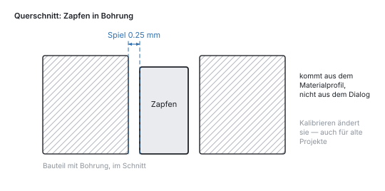
Deshalb wirkt eine Kalibrierung rückwärts. Unter Bearbeiten → Material kalibrieren wird der gemessene Wert eingetragen. Er gilt ab dann für jede Passung — auch für die in Projekten, die vorher entstanden sind.
Gemessen wird gedruckt, nicht geschätzt. Der Toleranz-Testkörper bringt Zapfen und Bohrungen mit gestaffeltem Spiel auf eine Platte: einmal drucken, ausprobieren, Wert steht. Die Wandstärkenleiter und der Überhangfächer machen dasselbe für die Mindestwandstärke und den Winkel, ab dem dieser Drucker wirklich Stützen braucht — statt der Faustregel 45 Grad.
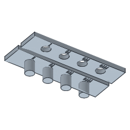
Die erste Schicht ist ein Sonderfall. Sie wird gegen das Bett gedrückt und läuft dabei nach außen aus. Bei einer Passung, die unten am Teil sitzt, ist das der Unterschied zwischen „geht rein“ und „geht nicht rein“.
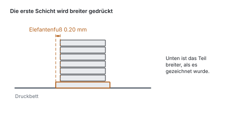
Das Prüfstück schneidet einen Würfel um eine Stelle heraus, statt sie nachzubauen. Was gedruckt wird, ist die echte Geometrie mit der echten Toleranz: zwei Minuten statt zwei Stunden, und das Ergebnis gilt für das Teil.
Eine Szene darf mehrere Materialien haben. Eine TPU-Dichtung in einem PETG-Gehäuse schwindet anders und will mehr Spiel. Mit Material festlegen bekommt der einzelne Körper sein eigenes Profil, und Toleranzen, Elefantenfuß und Passungsprüfung rechnen damit.
Die Bausteine
Ein Sechskant so tief in eine Wand zu legen, dass eine M4-Mutter hineinpasst und die Schraube trotzdem greift, ist eine halbe Stunde Arbeit — beim ersten Mal. Die Bausteinbibliothek nimmt sie ab: Baustein wählen, Größe wählen, auf die Fläche setzen.
Die Maße kommen aus einer Tabelle, nicht aus dem Gedächtnis. Was ein M4-Sechskant für Schlüsselweite hat, wie tief eine Einpressbuchse sitzt, wie breit ein Filmscharnier sein darf — das ist nachgeschlagen und nicht geschätzt.
Mutternfalle — die Tasche für eine Sechskantmutter, die beim Drucken eingelegt wird. Die häufigste Art, an einem gedruckten Teil ein belastbares Gewinde zu bekommen.

Einpressbuchse — die abgestufte Bohrung für eine Messingbuchse, die mit dem Lötkolben eingeschmolzen wird. Aufwendiger als die Mutternfalle, dafür beliebig oft lösbar.

Rastnase — der federnde Arm, der beim Fügen ausweicht und danach einrastet. Ein Deckel, der ohne Schraube hält.
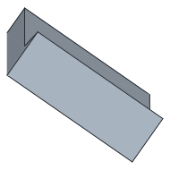
Filmscharnier — eine Stelle, die so dünn ist, dass sie sich biegt, statt zu brechen. Das Gelenk wird mitgedruckt, es gibt nichts zu montieren.

Dazu kommen Schraubenloch, Magnettasche, Kabeldurchführung, Rippe, Schlüsselloch, gedrucktes Gewinde und die Prüfkörper aus dem vorigen Kapitel. Der Katalog zeigt zu jedem ein Bild — eine Bibliothek, die man nicht sieht, gibt es für den Benutzer nicht.
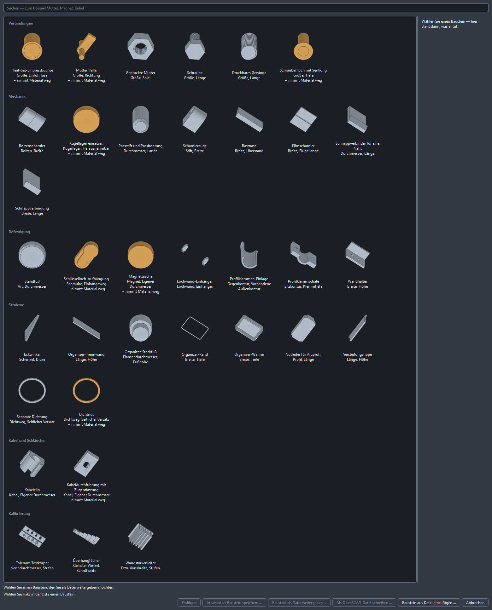
Jeder Baustein bleibt änderbar wie jede andere Operation. Er steht im Verlauf, seine Maße lassen sich später korrigieren, und die Stellen, an denen er ansetzt, behalten ihren Namen.
Auf die Platte und hinaus
Auf dem Bett anordnen legt die Objekte nebeneinander und beginnt eine neue Platte, sobald die aktuelle voll ist. Was auch dann nicht passt, wird nicht weggelassen, sondern gemeldet.
Zu groß für das Bett? Automatisch teilen schneidet, bis jedes Stück passt. Die Trennebene wird gesucht und nicht geraten, in jede Schnittfläche kommen zwei Passstifte, und jeder Schnitt bleibt eine Zahl, die man danach ändern kann.
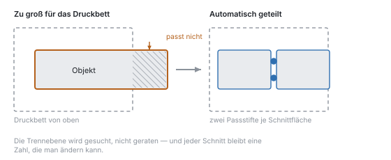
Was schräg nach außen wächst, braucht irgendwann Stützen. Wie schräg, hängt am Drucker und nicht an einer Faustregel — deshalb misst der Überhangfächer es aus.
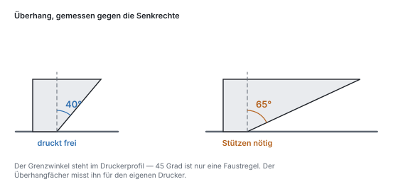
Zu dünne Wände drucken nicht. Weniger als zwei Bahnen nebeneinander trägt nichts und reißt, sobald man die Stützen abmacht.
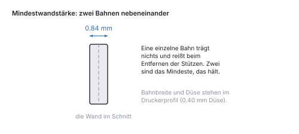
Exportiert wird nach STL, 3MF oder STEP. 3MF ist, was Slicer bevorzugen, und es trägt die Materialslots als Farbgruppen mit; STL kennt keine Farbe und verliert sie folgerichtig. STEP gibt es für exakte Körper, mit echten Flächen und Kanten.
Der Slicer bleibt außen. Die Schichtanalyse sucht und bewertet — Inseln, Spannweiten, dünne Stellen, die beste Lage —, aber die Druckdatei schreibt der Slicer. Wo beide Zahlen nennen, wird immer ausgewiesen, welche woher kommt.
Wenn das Teil nicht auf die Platte passt
Ein Bauraum ist endlich, und das Teil, das man braucht, ist es manchmal nicht. Dann wird geteilt — und die Frage ist nicht ob, sondern wo und wie die Hälften wieder zusammenkommen.
Bearbeiten → Automatisch teilen nimmt beides ab. Die Trennebene wird gesucht, nicht geraten: über dieselbe Schichtanalyse wie die Orientierungssuche, und bewertet werden drei Dinge. Eine Naht, die aus einer Kontur besteht, ist besser als eine, die in fünf dünne Stege zerfällt. Ein prismatischer Verlauf — der Querschnitt ändert sich über einen Millimeter kaum — klebt sich sauberer als eine Schräge. Und die Hälften sollen ähnlich groß sein. Die Konturzahl wiegt am schwersten: eine Naht in mehreren Stegen ist schlimmer als jede Unwucht.
In jede Schnittfläche kommen zwei Passstifte. Ihr Durchmesser kommt aus der Fläche, ihr Spiel aus dem kalibrierten Materialprofil — nicht aus einer geratenen Zahl. Zu jedem Stift entsteht ein Passungspaar, und das wird bei jeder Auswertung geprüft. Zwei Stifte statt einem, damit sich die Hälften nicht gegeneinander verdrehen lassen.
Jeder Schnitt ist eine eigene Operation. Die Trennebene bleibt damit eine Zahl, die man nachträglich verschieben kann, und ein Undo nimmt einen Schnitt zurück statt der ganzen Teilung.
Der Schieber „Explosion“ unter der Ansicht zieht die Teile zum Ansehen auseinander — er verschiebt nur die Anzeige. Was der Stapel sagt und was exportiert wird, bleibt, wo es ist.
Wer die Ebene selbst legen will, nimmt Ändern → Teilen und verstiften und trägt Achse und Position ein. Dieselbe Operation, nur ohne die Suche davor.
Ausprobieren statt raten: Varianten und Kalibrieren
Die Zahl, die über eine Passung entscheidet, ist das Spiel — und sie hängt am Drucker, am Material und an der Düse. Geraten wird sie einmal; danach misst man sie.
Der Weg dorthin ist ein Prüfstück. Unter Bausteine → Toleranz-Testkörper entsteht eine Reihe von Zapfen und Bohrungen mit abgestuftem Spiel — vorgegeben sind vier Stufen von 0,10 mm an, je 0,05 mm weiter, also bis 0,25 mm. Beides lässt sich im Dialog ändern, wenn der Bereich nicht trifft. Einmal drucken, durchprobieren, den Wert merken, der saugend passt.
Dieser Wert gehört ins Materialprofil, nicht ins Modell: Bearbeiten → Material kalibrieren. Weil jede Toleranz im Programm ein Verweis ist und keine Zahl, rechnet danach auch ein Teil damit, das vor der Kalibrierung entstanden ist. Ein Deckel von letzter Woche passt nach dem Eintrag besser, ohne dass ihn jemand anfasst.
Dasselbe gibt es für Wandstärken (Wandstärkenleiter) und Überhänge (Überhangfächer) — die zwei anderen Zahlen, die man sonst schätzt.
Wenn eine Zahl nicht am Material hängt, sondern am Teil, hilft der Variantengenerator: Ändern → Varianten erzeugen dreht einen Projektparameter durch einen Bereich und legt die Ausführungen nebeneinander. Fünf Griffdurchmesser auf einer Platte, ein Druck, eine Entscheidung. Der Stapel bleibt dabei unberührt — die Varianten sind eine Ausgabe, keine Änderung am Projekt.
Der Chat
Der Chat ruft dieselben Operationen auf, die auch in den Menüs stehen — er ist eine zweite Hand am selben Werkzeug und kein zweiter Weg an ihm vorbei.
Daraus folgen zwei Dinge. Jeder Vorschlag ist genau eine Transaktion: ein Undo nimmt ihn vollständig zurück, nie halb. Und der Chat rechnet keine Geometrie — er wählt Operationen und Werte, gerechnet wird im Programm.
Der Ablauf ist immer derselbe. Sie schreiben, was Sie wollen. Der Chat antwortet mit einem Vorschlag — einer Liste von Operationen, noch nicht ausgeführt. Die Ansicht zeigt in Blau und Orange, was dazukäme und was verschwände. Erst Übernehmen trägt ihn in den Verlauf ein; Verwerfen lässt nichts zurück.
Vier Regeln hat er mitbekommen, und sie stehen nicht zur Verhandlung: Bausteine vor selbst gebauten Formen, eine Op-Liste vor OpenSCAD-Quelltext, benannte Parameter vor eingetippten Zahlen — und fragen vor raten. Wenn Ihre Anfrage zwei Lesarten hat, kommt eine Rückfrage und kein Ergebnis.
Was er sieht, ist nicht der rohe Verlauf, sondern ein Steckbrief: Maße, erkannte Merkmale, Projektparameter, die aktuelle Auswahl, der Prüfbericht. Ein zurückgenommener Beitrag gilt als verworfen — nach einem Undo argumentiert er nicht mehr mit einem Zustand, den es nicht mehr gibt.
An jeder Transaktion steht, woher sie kommt (§26.4): Modell, Version des Systemprompts, Version der Regelsammlung. Wer in einem halben Jahr wissen will, warum eine Bohrung dort sitzt, findet die Antwort im Verlauf.
Er braucht ein Modell: entweder einen eigenen Schlüssel (Bearbeiten → Zugang zum Sprachmodell, abgelegt im Schlüsselbund des Systems, nie in der Projektdatei) oder ein lokales Ollama. Für die Werkzeugaufrufe muss es groß genug sein; unter 7B scheitern sie reproduzierbar.
Alles andere in Solidon kommt ohne Sprachmodell aus. Ohne Schlüssel ist der Chat ausgegraut und sagt in einem Satz warum — mehr passiert nicht.
Ein Modell erzeugen lassen
Der dritte Weg (§2.2): Sie beschreiben ein Teil oder legen ein Bild hin, und ein Generator macht daraus ein Netz. Datei → Modell erzeugen.
Gerechnet wird das nicht in Solidon, sondern in einem lokalen ComfyUI auf Port 8188. Läuft keines, bleibt der Eintrag ausgegraut und sagt warum; alles andere funktioniert weiter. Welche Knoten benutzt werden, steht in zwei Dateien neben dem Programm — wer einen anderen Generator hat, tauscht die Datei und nicht den Quelltext.
Was zurückkommt, ist eine Oberfläche und keine Konstruktion. Das ist der wichtigste Satz zu diesem Weg. Ein erzeugtes Netz hat keine Bohrungen, keine Passungen und oft keine Wasserdichtheit — es hat eine Form. Bohrungen und Passungen entstehen danach als eigene Operationen, nicht dadurch, dass man das Netz vermisst.
Das Erzeugte wird eine Quelle, keine Operation. Ein Generator ist keine Funktion: dieselbe Anfrage liefert nach einem Modellwechsel etwas anderes. Die Bytes liegen deshalb im Projekt wie eine hineingezogene Datei, und der Stapel darüber ist der gewöhnliche — Laden, dann Reparieren. Anfrage und Startwert stehen in der Quelle, damit die Datei sagt, woher die Geometrie stammt.
Die Reparaturkette läuft ohne Nachfrage, aber als eigener Schritt: sichtbar im Verlauf, sichtbar im Bericht, zurücknehmbar. Erzeugte Netze sind selten geschlossen, und was sie brauchen, ist immer dasselbe — Löcher schließen, Punkte verschweißen, Normalen richten.
Derselbe Startwert liefert dasselbe Ergebnis, soweit das Modell auf der anderen Seite das zulässt. Er steht im Dialog und wird mitgespeichert.
Oberflächen und Füllungen
Ein Rändel für den Griff, eine Wabe fürs Aussehen, ein Gitter statt massiven Materials — beides ist echte Geometrie, keine Textur im Bild. Was der Slicer bekommt, ist das, was Sie sehen.
Textur aufbringen prägt ein Muster auf eine Fläche, erhaben oder vertieft. Zwei Zahlen entscheiden, ob es druckbar ist: die Teilung muss breiter sein als zwei Bahnen der Düse, die Tiefe höher als eine Schicht. Beides prüft Solidon, bevor es rechnet — eine Prägung, die feiner ist als der Drucker, verschwindet, und das merkt man sonst erst am fertigen Teil.
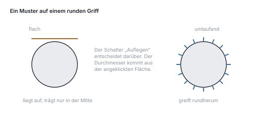
Auf einem runden Teil wird das Muster umlaufend aufgelegt. Flach aufgelegt träfe das Feld den Zylinder nur in seiner Mitte und stünde an den Rändern in der Luft.
Gitter füllen ersetzt das Innere eines Körpers durch eine Struktur — Gyroid, Wabe oder Würfelgitter. Das ist nicht dasselbe wie die Füllung des Slicers: diese hier gehört zum Modell, reist mit der Datei und lässt sich messen. Die Wandstärke der Struktur wird gegen die Düse geprüft, so wie bei der Textur.
Fernsteuerung
Ein anderes Programm auf demselben Rechner darf Solidon bedienen — über MCP, dieselbe Schnittstelle, mit der Claude Code und ähnliche Werkzeuge arbeiten. Es ruft dabei genau die Operationen auf, die auch in den Menüs stehen.
Sie ist aus, bis Sie sie einschalten. Der Schalter steht in den Einstellungen, zusammen mit dem Port. Danach hört Solidon auf 127.0.0.1 und nur dort: von einem anderen Rechner ist die Schnittstelle nicht erreichbar, auch nicht aus dem eigenen Netz.
Was hereinkommt, ist eine Transaktion wie jede andere. Ein Strg+Z im Fenster nimmt sie zurück, der Verlauf zeigt sie, und am Eintrag steht, dass sie von außen kam.
Zwei Dinge gehen nicht durch die Leitung, und das ist Absicht: OpenSCAD-Quelltext und alles, was wie ein Dateipfad aussieht. Beides würde bedeuten, dass ein fremdes Programm bestimmt, was auf diesem Rechner ausgeführt oder gelesen wird.
In der Gegenstelle wird sie als Server mit der Adresse http://127.0.0.1:8787/mcp eingetragen.
Wenn etwas nicht geht
Die Fälle, die am Anfang am häufigsten sind — was dahintersteckt und was hilft.
„Das Modell ist nicht geschlossen.“ In der Datei fehlen Flächen, oder Dreiecke liegen verkehrt herum. Bei heruntergeladenen Modellen ist das normal. Reparieren im Prüfbericht schließt kleine Löcher und dreht Flächen um. Fehlt eine ganze Wand, kann das keine Reparatur erraten — dann ist die Datei kaputt und eine andere Quelle der kürzere Weg.
Eine Verknüpfung schlägt fehl oder frisst zu viel. Boolesche Operationen brauchen saubere Eingangskörper. Solidon versucht es der Reihe nach mit mehreren Verfahren und sagt hinterher, welches getragen hat. Steht dort voxel, wurde grob gerechnet und Genauigkeit ist verloren gegangen — dann erst reparieren, dann noch einmal verknüpfen.
Zwei Flächen liegen genau aufeinander. Der klassische Fall, in dem eine Differenz nichts wegnimmt oder Flimmern entsteht. Abhilfe: den abzuziehenden Körper einen Hundertstelmillimeter überstehen lassen. Die Bausteine machen das von sich aus.
Das Teil passt nicht auf das Bett. Automatisch teilen schneidet es, bis jedes Stück passt, und setzt Passstifte in die Schnittflächen. Steht im Druckerprofil ein falscher Bauraum, ist das die eigentliche Ursache — nachsehen lohnt sich.
Die Passung sitzt zu stramm oder zu locker. Nicht am Modell ändern, sondern messen: den Toleranz-Testkörper drucken, ausprobieren und den Wert unter Material kalibrieren eintragen. Er gilt danach für jede Passung, auch für die in schon gebauten Projekten.
Ein Schritt lässt sich nicht mehr ändern. Wenn eine Änderung die Anzahl der Objekte ändern würde, während spätere Schritte mit diesen Objekten arbeiten, hält die Auswertung an. Das ist Absicht: die neuen Körper sind nicht die alten, und ein stillschweigend woanders gelandeter Schritt wäre schlimmer als eine Meldung. Die späteren Schritte zurücknehmen, ändern, neu aufbauen.
Verrundung, Fase oder STEP sind ausgegraut. Diese Operationen brauchen den zweiten Konstruktionskern mit echten Kanten. Er ist eine zusätzliche Installation. Ohne ihn läuft alles andere unverändert weiter.
Der Chat antwortet nicht. Er braucht ein Sprachmodell — einen eigenen Schlüssel oder ein lokales Ollama. Kleine Modelle unter etwa sieben Milliarden Parametern scheitern an den Werkzeugaufrufen, und zwar zuverlässig. Alles außer dem Chat funktioniert ohne.
Alles ist zäh. Beim Arbeiten läuft die Entwurfsqualität; die feine Rechnung kommt erst beim Export. Bei sehr großen Netzen hilft es, früh zu vereinfachen — die Dreieckszahl steht im Objektbaum.
Grundsätzlich gilt: Kein Fehler in Solidon endet bei der Feststellung. Steht keine Handlung dabei, mit der es weitergeht, ist das ein Fehler in Solidon und einen Bericht wert.
Wörterbuch
Die Wörter, die in Solidon, in Slicern und in Druckforen vorkommen — kurz erklärt.
Netz (Mesh) — ein Körper als Hülle aus Dreiecken. STL und OBJ enthalten nichts anderes: keine Kreise, keine Maße, nur Dreiecke.
Geschlossen (wasserdicht) — die Hülle hat kein Loch, innen und außen sind eindeutig. Nur ein geschlossener Körper lässt sich zuverlässig verknüpfen und drucken.
Operation — ein Arbeitsschritt: bohren, verrunden, teilen, einen Baustein setzen. In Solidon entsteht Geometrie nur so.
Transaktion — alles, was ein Rückgängig auf einmal zurücknimmt. Ein Vorschlag des Chats ist genau eine, auch wenn er aus fünf Operationen besteht.
Parameter — ein benanntes Maß des Projekts, etwa breite. Operationen dürfen damit rechnen; ändert sich der Wert, ändert sich alles, was daran hängt.
Baustein — ein fertiges Konstruktionselement aus der Bibliothek, mit Maßen aus einer Tabelle statt aus dem Gedächtnis.
Passung — wie stramm zwei Teile ineinandersitzen. Das nötige Spiel kommt aus dem Materialprofil.
Spiel — der Abstand zwischen Zapfen und Loch, damit sich beides fügen lässt. Zu wenig klemmt, zu viel wackelt.
Presspassung — Übermaß statt Spiel: das Teil wird eingepresst und hält von selbst.
Toleranz — der Betrag, um den ein Maß absichtlich vom Nennmaß abweicht, damit das gedruckte Ergebnis stimmt.
Schwund — Kunststoff zieht sich beim Abkühlen zusammen. Deshalb ist ein gedrucktes Teil etwas kleiner als gezeichnet.
Elefantenfuß — die unterste Schicht wird gegen das Bett gedrückt und läuft nach außen aus. Das Teil ist unten breiter als geplant.
Überhang — eine Fläche, die schräg nach außen wächst. Ab einem gewissen Winkel hat die Schicht darunter nichts mehr, worauf sie sich legen kann.
Stützen — mitgedrucktes Material unter einem Überhang, das hinterher abgebrochen wird.
Insel — ein Bereich einer Schicht, unter dem nichts ist. Ohne Stütze druckt der Drucker dort in die Luft.
Brücke (Spannweite) — ein waagerechter Steg zwischen zwei Stützpunkten. Kurze Brücken gelingen ohne Stütze, lange hängen durch.
Düse — die Öffnung, durch die der Kunststoff austritt, üblicherweise 0,4 mm. Sie begrenzt, wie fein ein Detail sein kann.
Extrusionsbreite — wie breit eine gelegte Bahn wird. Zwei Bahnen nebeneinander sind die dünnste sinnvolle Wand.
Schichthöhe — wie dick eine Lage ist, meist 0,2 mm. Kleiner heißt feiner und langsamer.
Slicer — das Programm, das aus dem Modell die Druckdatei macht. Solidon ist keiner und ersetzt keinen.
G-Code — die fertige Anweisungsliste für den Drucker. Sie kommt aus dem Slicer.
STL — das verbreitetste Format: nur Dreiecke, keine Einheit, keine Farbe.
3MF — der moderne Nachfolger: mit Einheit, Farben und mehreren Objekten in einer Datei. Wo der Slicer es kann, ist es die bessere Wahl.
STEP — ein Format mit echten Flächen und Kanten statt Dreiecken. Das, was klassische CAD-Programme austauschen.
Prüfbericht — die Liste dessen, was an der Szene auffällt, jeweils mit einer Handlung, die es behebt.
Materialslot — die Zuordnung einer Fläche zu einem Material oder einer Farbe beim Mehrfarbendruck.
Szene
Auf dem Bett anordnen (arrange_bed)
Legt alle Objekte nebeneinander auf das Druckbett.
Objekte: 0 → -1 · umkehrbar · deterministisch
| Parameter | Einheit | Vorgabe | Bereich | Bedeutung |
|---|---|---|---|---|
Abstand spacing | mm | 5 | 0 … 100 | Luft zwischen den Teilen. Genug, dass ein Elefantenfuß zwei Teile nicht am Rand zusammenwachsen lässt. |
Druckplatten plates | 1 | 1 … 12 | Passt nicht alles auf eine Platte, wandert der Rest auf die nächste. | |
Nach Filament trennen by_material | aus | Legt Teile aus verschiedenen Filamenten auf verschiedene Platten. Zwei Filamente auf einer Platte kosten je gemeinsamer Schicht einen Wechsel samt Spülgang. |
Kollisionen prüfen (check_collisions)
Meldet Überschneidungen und was über den Bauraum hinaussteht.
Objekte: 0 → -1 · umkehrbar · deterministisch
| Parameter | Einheit | Vorgabe | Bereich | Bedeutung |
|---|---|---|---|---|
Mindestabstand clearance | mm | 0 | 0 … 50 | Ab wann zwei Teile als zu nah gelten. Null meldet nur echte Überschneidungen; ein Wert darüber meldet auch knappe Stellen. |
Objekt duplizieren (duplicate_object)
Legt weitere Ausfertigungen des Objekts an. Alle bleiben getrennt, und die Stückzahl steht als Zahl im Stapel.
Objekte: 1 → -1 · umkehrbar · deterministisch · Kürzel Ctrl+D
| Parameter | Vorgabe | Bereich | Bedeutung |
|---|---|---|---|
Anzahl count | 2 | 1 … 100 | Wie viele Ausfertigungen es danach gibt. Zwei ist eine Kopie — die Stückzahl steht damit im Stapel und nicht im Dateinamen. |
Name der Kopie name | Leer lässt den Namen aus dem Original ableiten. |
Objekt entfernen (delete_object)
Nimmt ein Objekt aus der Szene. Der Schritt steht im Verlauf, ein Rückgängig holt es also zurück.
Objekte: 1 → 0 · umkehrbar · deterministisch · Kürzel Del
Objekt umbenennen (rename_object)
Gibt einem Objekt einen anderen Namen. Die Geometrie bleibt unberührt.
Objekte: 1 → 1 · umkehrbar · deterministisch · Kürzel F2
| Parameter | Vorgabe | Bedeutung |
|---|---|---|
Name name | erforderlich | Neuer Name des Objekts. |
Reparatur
Reparieren (repair)
Schließt Löcher, entfernt entartete Dreiecke und richtet die Flächen aus.
Objekte: 1 → 1 · umkehrbar · deterministisch
| Parameter | Vorgabe | Bedeutung |
|---|---|---|
Offene Stellen schließen fill_holes | an | Schließt kleine Löcher. Fehlende Wände kann das nicht ersetzen. |
Punkte verschweißen weld | an | Führt Punkte zusammen, die praktisch aufeinanderliegen. Der häufigste Grund dafür, dass ein Netz aus mehreren Teilen zu bestehen scheint. |
Entartete Dreiecke entfernen degenerate | an | Dreiecke ohne Fläche. Sie stören jede spätere Rechnung und tragen nichts. |
Normalen vereinheitlichen normals | an | Richtet aus, wo außen ist. Ohne das erscheinen Flächen dunkel oder verschwinden. |
Kleinstteile löschen small_components | aus | Standardmäßig aus: gelöscht wird nur, was ausdrücklich gelöscht werden soll. |
Selbstdurchdringungen auflösen self_intersections | aus | Rechnet Flächen neu, die sich gegenseitig durchdringen. Hilft bei erzeugten Netzen und kostet Genauigkeit — deshalb aus, bis es gebraucht wird. |
Transformation
An Merkmal ausrichten (align_to_feature)
Bringt eine Bohrungsachse oder eine Fläche mit einer zweiten zur Deckung.
Objekte: 1 → 1 · umkehrbar · deterministisch · Gilt für: Bohrung, Fläche
| Parameter | Vorgabe | Bedeutung |
|---|---|---|
Merkmal feature | Bohrung oder Fläche am bewegten Objekt, zum Beispiel hole_1. | |
Ziel target | Merkmal, auf das ausgerichtet wird, als obj_2:hole_1. | |
Umgekehrt herum flip | aus | Dreht das Ergebnis um 180 Grad, wenn die andere Seite gemeint war. |
Auf das Bett setzen (place_on_bed)
Setzt das Objekt mit seiner Unterseite auf Z = 0.
Objekte: 1 → 1 · umkehrbar · deterministisch
Auf Maß bringen (fit_to_size)
Skaliert ein Objekt so, dass seine längste Kante das angegebene Maß hat. Für alles, dessen Größe man kennt, aber dessen Faktor man erst ausrechnen müsste.
Objekte: 1 → 1 · umkehrbar · deterministisch
| Parameter | Einheit | Vorgabe | Bereich | Bedeutung |
|---|---|---|---|---|
Größte Kante largest | mm | 100 | 0,1 … 1000 | Auf dieses Maß wächst die längste Kante; die anderen folgen im Verhältnis. |
Bezug about | centre | centre, origin, bed | Welcher Punkt beim Skalieren stehen bleibt. |
Drehen (rotate_object)
Dreht ein Objekt um eine Achse.
Objekte: 1 → 1 · umkehrbar · deterministisch · Kürzel Ctrl+R
| Parameter | Einheit | Vorgabe | Bereich | Bedeutung |
|---|---|---|---|---|
Achse axis | z | x, y, z | Um welche Achse gedreht wird. Z dreht auf dem Bett, X und Y kippen. | |
Winkel angle | grad | 90 | -360 … 360 | Drehwinkel gegen den Uhrzeigersinn, von der Achsspitze aus gesehen. |
Drehpunkt about | centre | centre, origin, bed | Schwerpunkt des Objekts, Weltnullpunkt oder Aufstandsfläche. |
Druckoptimal ausrichten (orient_for_print)
Sucht die Lage mit dem geringsten Stützbedarf.
Objekte: 1 → 1 · umkehrbar · mit Startwert
| Parameter | Vorgabe | Bereich | Bedeutung |
|---|---|---|---|
Gründlich suchen thorough | an | Rechnet hunderte Lagen mit der Schichtanalyse durch. Aus heißt: schnelle Heuristik über die Flächen. | |
Kandidaten candidates | 200 | 8 … 2000 | Wie viele Lagen durchgerechnet werden. Mehr findet feinere Verbesserungen und dauert entsprechend länger. |
Muster (pattern)
Legt Kopien in einer Reihe oder auf einem Kreis an — ein Lochbild, ein Kranz Schraubdome, eine Reihe Clips. Ein Schritt mit einer Zahl darin statt neun gleicher Schritte im Stapel.
Objekte: 1 → -1 · umkehrbar · deterministisch
| Parameter | Einheit | Vorgabe | Bereich | Bedeutung |
|---|---|---|---|---|
Art kind | linear | linear, circular | Linear reiht die Kopien entlang einer Richtung auf, kreisförmig legt sie um eine Achse. Eine Operation, zwei Arten — nicht zwei Einträge. | |
Anzahl count | 4 | 1 … 100 | Wie viele Ausfertigungen es danach gibt, das Original mitgezählt. Eine einzige ist kein Muster. | |
Abstand spacing | mm | 20 | 0 … | Von Mitte zu Mitte, bei der linearen Art. Kreisförmig zählt der Winkel. |
Winkel angle | grad | 360 | -360 … 360 | Über welchen Bogen die Kopien verteilt werden. Volle 360 Grad schließen den Kranz, ohne dass zwei Kopien aufeinanderfallen. |
Achse axis | z | x, y, z | Um welche Achse der Kranz läuft. Sie geht durch den Ursprung. | |
Richtung X dx | 1 | Richtung der linearen Reihe. Ohne Richtung lägen alle Kopien übereinander. | ||
Richtung Y dy | 0 | Zweite Achse der Richtung — siehe Richtung X. | ||
Richtung Z dz | 0 | Dritte Achse der Richtung — siehe Richtung X. |
Skalieren (scale_object)
Skaliert ein Objekt gleichmäßig oder achsweise.
Objekte: 1 → 1 · umkehrbar · deterministisch
| Parameter | Vorgabe | Bereich | Bedeutung |
|---|---|---|---|
Faktor factor | 1 | 0,01 … 100 | Gleichmäßige Skalierung. Achsweise Werte stehen hinten. |
Faktor X fx | 0 | 0 … | Nur diese Achse. Null heißt: der gleichmäßige Faktor oben gilt. |
Faktor Y fy | 0 | 0 … | Null heißt: der gleichmäßige Faktor oben gilt. |
Faktor Z fz | 0 | 0 … | Null heißt: der gleichmäßige Faktor oben gilt. Achsweise Skalierung verzerrt Bohrungen — sie werden oval. |
Bezugspunkt about | centre | centre, origin, bed | Der Punkt, der stehen bleibt: Schwerpunkt, Nullpunkt oder Aufstandsfläche. |
Spiegeln (mirror_object)
Spiegelt ein Objekt an einer Achse. Für das Gegenstück eines Teils — linke und rechte Halterung aus derselben Konstruktion.
Objekte: 1 → 1 · umkehrbar · deterministisch
| Parameter | Vorgabe | Bereich | Bedeutung |
|---|---|---|---|
Achse axis | x | x, y, z | Die Achse, an der gespiegelt wird — die andere Hand desselben Teils. |
Bezugspunkt about | centre | centre, origin, bed | Wo die Spiegelebene liegt: Schwerpunkt, Nullpunkt oder Aufstandsfläche. |
Verschieben (translate_object)
Verschiebt ein Objekt um die angegebenen Millimeter.
Objekte: 1 → 1 · umkehrbar · deterministisch · Kürzel Ctrl+T
| Parameter | Einheit | Vorgabe | Bedeutung |
|---|---|---|---|
Verschiebung X dx | mm | 0 | Um wie viel verschoben wird, nicht wohin. Positiv geht nach rechts. |
Verschiebung Y dy | mm | 0 | Positiv geht nach hinten. |
Verschiebung Z dz | mm | 0 | Positiv geht nach oben. Zum Aufsetzen gibt es Auf das Bett setzen. |
Grundformen
Exakten Quader anlegen (create_brep_box)
Legt einen Quader als B-Rep-Körper an — mit echten Kanten, an die Fasen und Verrundungen gesetzt werden können.
Objekte: 0 → 1 · umkehrbar · deterministisch
| Parameter | Einheit | Vorgabe | Bereich | Bedeutung |
|---|---|---|---|---|
Breite width | mm | 40 | 0,1 … 1000 | Ausdehnung in X. |
Tiefe depth | mm | 30 | 0,1 … 1000 | Ausdehnung in Y. |
Höhe height | mm | 20 | 0,1 … 1000 | Ausdehnung in Z, also nach oben. |
Name name | Wie das Objekt im Baum heißt. Leer heißt: Solidon vergibt einen. |
Exakten Zylinder anlegen (create_brep_cylinder)
Legt einen Zylinder als B-Rep-Körper an, stehend auf Z = 0.
Objekte: 0 → 1 · umkehrbar · deterministisch
| Parameter | Einheit | Vorgabe | Bereich | Bedeutung |
|---|---|---|---|---|
Durchmesser diameter | mm | 20 | 0,1 … 1000 | Außendurchmesser. Als exakter Körper ist er wirklich rund, nicht vieleckig. |
Höhe height | mm | 20 | 0,1 … 1000 | Höhe nach oben, von der Standfläche aus. |
Name name | Wie das Objekt im Baum heißt. Leer heißt: Solidon vergibt einen. |
Kugel anlegen (create_sphere)
Legt eine Kugel an, aufsitzend auf Z = 0.
Objekte: 0 → 1 · umkehrbar · deterministisch
| Parameter | Einheit | Vorgabe | Bereich | Bedeutung |
|---|---|---|---|---|
Durchmesser diameter | mm | 20 | 0,1 … 1000 | Außendurchmesser. Die Kugel sitzt auf Z = 0 auf. |
Segmente segments | 32 | 8 … 128 | Mehr Segmente heißt runder und langsamer. | |
Name name | Wie das Objekt im Baum heißt. Leer heißt: Solidon vergibt einen. |
OpenSCAD-Teil anheften (create_from_scad)
Baut einen Körper aus OpenSCAD-Quelltext. Rückfallebene für Formen, für die es keinen Baustein gibt — braucht eine Installation und wird vorher geprüft.
Objekte: 0 → 1 · umkehrbar · deterministisch
| Parameter | Bedeutung |
|---|---|
Quelltext source | OpenSCAD-Quelltext. Wird vor dem Lauf geprüft. |
Name name | Wie das Objekt im Baum heißt. Leer heißt: Solidon vergibt einen. |
Quader anlegen (create_box)
Legt einen Quader an, mittig auf Z = 0 oder auf einer Ecke.
Objekte: 0 → 1 · umkehrbar · deterministisch
| Parameter | Einheit | Vorgabe | Bereich | Bedeutung |
|---|---|---|---|---|
Breite width | mm | 40 | 0,1 … 1000 | Ausdehnung in X. Darf ein Ausdruck sein, etwa =breite*2. |
Tiefe depth | mm | 30 | 0,1 … 1000 | Ausdehnung in Y. |
Höhe height | mm | 10 | 0,1 … 1000 | Ausdehnung in Z, also nach oben. |
Bezugspunkt anchor | centre | centre, corner | Mittig auf dem Ursprung oder mit der Ecke darauf. | |
Name name | Wie das Objekt im Baum heißt. Leer heißt: Solidon vergibt einen. |
Zylinder anlegen (create_cylinder)
Legt einen Zylinder an, stehend auf Z = 0.
Objekte: 0 → 1 · umkehrbar · deterministisch
| Parameter | Einheit | Vorgabe | Bereich | Bedeutung |
|---|---|---|---|---|
Durchmesser diameter | mm | 20 | 0,1 … 1000 | Außendurchmesser. Der Zylinder steht auf Z = 0. |
Höhe height | mm | 20 | 0,1 … 1000 | Höhe nach oben, von der Standfläche aus. |
Segmente segments | 48 | 8 … 256 | Mehr Segmente heißt runder und langsamer. | |
Name name | Wie das Objekt im Baum heißt. Leer heißt: Solidon vergibt einen. |
Boolesch
Abziehen (subtract_objects)
Zieht das zweite Objekt vom ersten ab.
Objekte: 2 → 1 · umkehrbar · mit Startwert
Schnittmenge (intersect_objects)
Behält nur, was beide Objekte gemeinsam haben.
Objekte: 2 → 1 · umkehrbar · mit Startwert
Vereinigen (union_objects)
Verschmilzt zwei Objekte zu einem.
Objekte: 2 → 1 · umkehrbar · mit Startwert
Skizze
Entlang eines Bogens führen (sketch_sweep)
Führt einen Querschnitt entlang eines Bogens: senkrecht startend, mit dem Bogenradius zur Seite kippend — ein Rohrbogen in einem Schritt.
Objekte: 0 → 1 · umkehrbar · deterministisch
| Parameter | Einheit | Vorgabe | Bereich | Bedeutung |
|---|---|---|---|---|
Grundform shape | circle | rectangle, slot, circle, polygon | Rechteck, Langloch, Kreis oder Vieleck — die Maße stehen darunter. | |
Länge length | mm | 10 | 0,1 … 1000 | Länge in X. Beim Kreis und beim Vieleck ist das der Durchmesser, beim Langloch die Gesamtlänge über die runden Enden. |
Breite width | mm | 10 | 0,1 … 1000 | Breite in Y. Beim Kreis und beim Vieleck ohne Wirkung. |
Bogenradius bend_radius | mm | 20 | 0,1 … 1000 | Radius des Pfades, dem der Querschnitt folgt. Er muss größer sein als der halbe Querschnitt, sonst knickt die Innenseite. |
Bogenwinkel bend_angle | ° | 90 | 1 … 180 | Wie weit der Bogen führt — 90 Grad ist ein rechtwinkliger Rohrbogen. |
Name name | Wie das Objekt im Baum heißt. Leer heißt: Solidon vergibt einen. | |||
Ecken corners | 6 | 3 … 64 | Zahl der Ecken, nur beim Vieleck. | |
Skizze sketch | Eine gezeichnete Skizze anstelle der Grundform. Leer heißt: die Grundform oben gilt. |
Grundform extrudieren (sketch_extrude)
Zieht eine Grundform senkrecht zu einem Körper auf. Der Umriss kommt aus einer gelösten Skizze und geht als exakte Kurve in den Kern — ein Kreis ist wirklich rund.
Objekte: 0 → 1 · umkehrbar · deterministisch
| Parameter | Einheit | Vorgabe | Bereich | Bedeutung |
|---|---|---|---|---|
Grundform shape | rectangle | rectangle, slot, circle, polygon | Rechteck, Langloch, Kreis oder Vieleck — die Maße stehen darunter. | |
Länge length | mm | 40 | 0,1 … 1000 | Länge in X. Beim Kreis und beim Vieleck ist das der Durchmesser, beim Langloch die Gesamtlänge über die runden Enden. |
Breite width | mm | 20 | 0,1 … 1000 | Breite in Y. Beim Kreis und beim Vieleck ohne Wirkung. |
Höhe height | mm | 10 | 0,1 … 1000 | Wie hoch der Körper aufgezogen wird, von Z = 0 nach oben. |
Ecken corners | 6 | 3 … 64 | Zahl der Ecken, nur beim Vieleck. | |
Region region | 0 | 0 … 64 | Bei einer Skizze mit mehreren getrennten Umrissen: welcher davon. Null heißt alle — sie werden zu einem Körper vereinigt. | |
Bis zur Fläche up_to | Statt der Höhe: bis auf die Höhe dieser Fläche. Leer heißt, die Höhe darüber gilt. Eine angeklickte Fläche trägt sich selbst ein. | |||
Name name | Wie das Objekt im Baum heißt. Leer heißt: Solidon vergibt einen. | |||
Skizze sketch | Eine gezeichnete Skizze anstelle der Grundform. Leer heißt: die Grundform oben gilt. |
Rotationskörper aufziehen (sketch_revolve)
Dreht einen Querschnitt um die senkrechte Achse: ein Rechteck wird zur Hülse, ein Kreis zum Ring. Der Körper steht auf Z = 0.
Objekte: 0 → 1 · umkehrbar · deterministisch
| Parameter | Einheit | Vorgabe | Bereich | Bedeutung |
|---|---|---|---|---|
Grundform shape | rectangle | rectangle, slot, circle, polygon | Rechteck, Langloch, Kreis oder Vieleck — die Maße stehen darunter. | |
Länge length | mm | 5 | 0,1 … 1000 | Ausdehnung des Querschnitts von der Achse weg. Beim Kreis und Vieleck ist das der Durchmesser. |
Breite width | mm | 8 | 0,1 … 1000 | Höhe des Querschnitts entlang der Achse. Beim Kreis ohne Wirkung. |
Abstand zur Achse offset | mm | 10 | 0 … 1000 | Abstand der Innenkante des Querschnitts von der Drehachse. Null macht den Körper voll bis zur Mitte. |
Winkel angle | ° | 360 | 1 … 360 | Wie weit um die Achse gedreht wird. 360 schließt den Körper. |
Name name | Wie das Objekt im Baum heißt. Leer heißt: Solidon vergibt einen. | |||
Ecken corners | 6 | 3 … 64 | Zahl der Ecken, nur beim Vieleck. | |
Skizze sketch | Eine gezeichnete Skizze als Querschnitt, benutzt wie gezeichnet: x ist der Abstand von der Achse, y die Höhe — der Abstand oben gilt dann nicht. |
Tasche schneiden (sketch_pocket)
Schneidet eine Grundform als Tasche in einen B-Rep-Körper — von der Oberkante senkrecht nach unten, auf Wunsch durchgehend. Ein Klick auf eine Fläche trägt den Ort vorab ein.
Objekte: 1 → 1 · umkehrbar · deterministisch · Gilt für: Fläche
| Parameter | Einheit | Vorgabe | Bereich | Bedeutung |
|---|---|---|---|---|
Grundform shape | rectangle | rectangle, slot, circle, polygon | Rechteck, Langloch, Kreis oder Vieleck — die Maße stehen darunter. | |
Länge length | mm | 20 | 0,1 … 1000 | Länge in X. Beim Kreis und beim Vieleck ist das der Durchmesser, beim Langloch die Gesamtlänge über die runden Enden. |
Breite width | mm | 10 | 0,1 … 1000 | Breite in Y. Beim Kreis und beim Vieleck ohne Wirkung. |
Tiefe depth | mm | 5 | 0,1 … 1000 | Wie tief die Tasche von ihrer Oberkante nach unten schneidet. |
Durchgehend through | aus | Schneidet durch die ganze Höhe des Körpers — die Tiefe zählt dann nicht. | ||
X x | mm | 0 | -1000 … 1000 | Mitte der Tasche in X. Eine angeklickte Fläche trägt den Ort selbst ein. |
Y y | mm | 0 | -1000 … 1000 | Mitte der Tasche in Y. Eine angeklickte Fläche trägt den Ort selbst ein. |
Oberkante z | mm | 0 | -1000 … 1000 | Wo die Tasche oben beginnt. Null heißt: an der Oberseite des Körpers. |
Ecken corners | 6 | 3 … 64 | Zahl der Ecken, nur beim Vieleck. | |
Skizze sketch | Eine gezeichnete Skizze anstelle der Grundform. Leer heißt: die Grundform oben gilt. |
Zwischen zwei Umrissen aufspannen (sketch_loft)
Spannt einen Körper zwischen der Grundform und ihrer verkleinerten Kopie in der Höhe auf — Pyramidenstumpf, Kegelstumpf, Trichter.
Objekte: 0 → 1 · umkehrbar · deterministisch
| Parameter | Einheit | Vorgabe | Bereich | Bedeutung |
|---|---|---|---|---|
Grundform shape | rectangle | rectangle, slot, circle, polygon | Rechteck, Langloch, Kreis oder Vieleck — die Maße stehen darunter. | |
Länge length | mm | 40 | 0,1 … 1000 | Länge in X. Beim Kreis und beim Vieleck ist das der Durchmesser, beim Langloch die Gesamtlänge über die runden Enden. |
Breite width | mm | 20 | 0,1 … 1000 | Breite in Y. Beim Kreis und beim Vieleck ohne Wirkung. |
Höhe height | mm | 20 | 0,1 … 1000 | Abstand zwischen unterem und oberem Umriss. |
Verjüngung top_scale | 0,5 | 0,05 … 2 | Größe des oberen Umrisses im Verhältnis zum unteren. 0,5 halbiert ihn — ein Pyramiden- oder Kegelstumpf; über 1 wird es oben weiter. | |
Name name | Wie das Objekt im Baum heißt. Leer heißt: Solidon vergibt einen. | |||
Ecken corners | 6 | 3 … 64 | Zahl der Ecken, nur beim Vieleck. |
Formgebung
Exakt aushöhlen (shell_exact)
Höhlt einen B-Rep-Körper mit exakter Wandstärke aus und lässt die Oberseite offen — ein Kasten aus einem Quader, in einem Schritt. Für geschlossenes Aushöhlen mit Entlüftung gibt es die Netz-Operation.
Objekte: 1 → 1 · umkehrbar · deterministisch
| Parameter | Einheit | Vorgabe | Bereich | Bedeutung |
|---|---|---|---|---|
Wandstärke wall | mm | 2 | 0,2 … 50 | Wie dick die stehenbleibende Wand wird. Mehr als der halbe Körper geht nicht — dann bleibt innen nichts zum Aushöhlen. |
Exakten Gewindebolzen erzeugen (thread_exact)
Ein Bolzen mit echtem helikalem Außengewinde — als exakter Körper, den der STEP-Export trägt. Mit Spiel vergrößert und von einem Körper abgezogen wird daraus das Innengewinde.
Objekte: 0 → 1 · umkehrbar · deterministisch
| Parameter | Einheit | Vorgabe | Bereich | Bedeutung |
|---|---|---|---|---|
Nenndurchmesser diameter | mm | 10 | 2 … 100 | Außendurchmesser über die Gewindespitzen — das Maß, das M10 meint. |
Steigung pitch | mm | 1,5 | 0,25 … 8 | Höhenzuwachs je Umdrehung. Grob gedruckte Gewinde wollen eine grobe Steigung — unter einem Millimeter druckt kaum ein Drucker sauber. |
Länge length | mm | 12 | 1 … 500 | Gewindelänge von Z = 0 nach oben, mindestens zwei Gänge. |
Name name | Wie das Objekt im Baum heißt. Leer heißt: Solidon vergibt einen. |
Fase anbringen (chamfer_edges)
Bricht Kanten eines B-Rep-Körpers unter 45 Grad.
Objekte: 1 → 1 · umkehrbar · deterministisch
| Parameter | Einheit | Vorgabe | Bereich | Bedeutung |
|---|---|---|---|---|
Breite distance | mm | 1 | 0,01 … 100 | Wie weit die Fase die Kante zurücknimmt, auf jeder der beiden Flächen. |
Kanten edges | vertical | all, vertical, horizontal, top, bottom | Welche Kanten gemeint sind — senkrechte, waagerechte, oben, unten oder alle. |
Fläche versetzen (push_face)
Greift eine Fläche und verschiebt sie entlang ihrer Normalen; die Nachbarwände wachsen mit. Der Weg, eine Wand zu ändern, ohne die Operation zu suchen, die sie erzeugt hat — bei einem importierten STEP gibt es keine.
Objekte: 1 → 1 · umkehrbar · deterministisch · Gilt für: Fläche
| Parameter | Einheit | Vorgabe | Bedeutung |
|---|---|---|---|
Weg distance | mm | 2 | Wie weit die Fläche wandert. Positiv nach außen, negativ hinein — dasselbe Werkzeug für beides. |
Richtung X nx | 0 | Welche Flächen bewegt werden: die, deren Normale hierhin zeigt. Eine angeklickte Fläche trägt die Richtung selbst ein. | |
Richtung Y ny | 0 | Zweite Achse der Richtung — siehe Richtung X. | |
Richtung Z nz | 1 | Dritte Achse der Richtung. Vorgabe ist nach oben. |
Formschräge anstellen (draft_faces)
Stellt alle senkrechten Flächen eines B-Rep-Körpers um einen Winkel an — zum Entformen, oder damit ein Stapelbehälter sich stapeln lässt.
Objekte: 1 → 1 · umkehrbar · deterministisch
| Parameter | Einheit | Vorgabe | Bereich | Bedeutung |
|---|---|---|---|---|
Winkel angle | ° | 2 | 0,1 … 30 | Um wie viel Grad die senkrechten Flächen angestellt werden. Die Standfläche behält ihr Maß, nach oben wird der Körper schmaler. |
Verrunden (fillet_edges)
Verrundet Kanten eines B-Rep-Körpers — geometrisch exakt, weil die Kante eine Kurve ist und keine Folge von Segmenten.
Objekte: 1 → 1 · umkehrbar · deterministisch
| Parameter | Einheit | Vorgabe | Bereich | Bedeutung |
|---|---|---|---|---|
Radius radius | mm | 2 | 0,01 … 100 | Radius der Verrundung. Größer als das dünnste angrenzende Material geht nicht — dann hat der Kern keinen Platz mehr. |
Kanten edges | vertical | all, vertical, horizontal, top, bottom | Welche Kanten gemeint sind — senkrechte, waagerechte, oben, unten oder alle. |
Bohrungen
Bohrung setzen (drill_hole)
Bohrt ein rundes Loch — auf Wunsch um die Materialtoleranz vergrößert.
Objekte: 1 → 1 · umkehrbar · mit Startwert · Kürzel Ctrl+B · Gilt für: Fläche
| Parameter | Einheit | Vorgabe | Bereich | Bedeutung |
|---|---|---|---|---|
Durchmesser diameter | mm | 5 | 0,2 … 200 | Nenndurchmesser der Bohrung. Für eine Schraube gibt es Schraubenloch in den Bausteinen — dort kommen die Maße aus der Normteiltabelle. |
Position X x | mm | 0 | Mitte der Bohrung im Koordinatensystem des Objekts. Eine angeklickte Fläche trägt die drei Werte selbst ein. | |
Position Y y | mm | 0 | Zweite Achse der Position — siehe Position X. | |
Position Z z | mm | 0 | Dritte Achse der Position — siehe Position X. | |
Achse axis | z | x, y, z | Richtung, in die gebohrt wird. Z ist senkrecht von oben, X und Y bohren durch eine Seitenwand. | |
Tiefe depth | mm | 0 | 0 … | Null bohrt durch das ganze Teil. |
Bezugspunkt anchor | mouth | mouth, centre | Was die Position bedeutet: die Mündung, an der die Bohrung anfängt, oder ihre Mitte. Bei einer durchgehenden Bohrung ändert es nichts. | |
Materialtoleranz berücksichtigen compensate | an | Vergrößert die Bohrung um den Wert aus dem Materialprofil. |
Bohrung verschließen (plug_hole)
Füllt eine Bohrung wieder auf — etwa wenn ein fremdes Teil eine zu viel hat.
Objekte: 1 → 1 · umkehrbar · deterministisch · Gilt für: Bohrung
| Parameter | Einheit | Vorgabe | Bereich | Bedeutung |
|---|---|---|---|---|
Durchmesser diameter | mm | 5 | 0,2 … 200 | Durchmesser der Bohrung, die zugemacht wird — etwas mehr schadet nicht. |
Position X x | mm | 0 | Mitte der Bohrung im Koordinatensystem des Objekts. Eine angeklickte Fläche trägt die drei Werte selbst ein. | |
Position Y y | mm | 0 | Zweite Achse der Position — siehe Position X. | |
Position Z z | mm | 0 | Dritte Achse der Position — siehe Position X. | |
Achse axis | z | x, y, z | Richtung, in die gebohrt wird. Z ist senkrecht von oben, X und Y bohren durch eine Seitenwand. | |
Tiefe depth | mm | 0 | 0 … 1000 | Null füllt durch das ganze Teil. |
Senken (countersink_hole)
Senkt die Mündung einer Bohrung an, damit ein Schraubenkopf bündig sitzt.
Objekte: 1 → 1 · umkehrbar · deterministisch · Gilt für: Bohrung
| Parameter | Einheit | Vorgabe | Bereich | Bedeutung |
|---|---|---|---|---|
Kopfdurchmesser diameter | mm | 8,4 | 0,5 … 100 | Durchmesser des Schraubenkopfes, nicht der Bohrung darunter. Eine angeklickte Bohrung trägt ihn deshalb bewusst nicht ein. |
Winkel angle | grad | 90 | 30 … 170 | Voller Kopfwinkel — 90 Grad bei metrischen Senkschrauben. |
Position X x | mm | 0 | Mitte der Bohrung im Koordinatensystem des Objekts. Eine angeklickte Fläche trägt die drei Werte selbst ein. | |
Position Y y | mm | 0 | Zweite Achse der Position — siehe Position X. | |
Position Z z | mm | 0 | Dritte Achse der Position — siehe Position X. | |
Achse axis | z | x, y, z | Richtung, in die gebohrt wird. Z ist senkrecht von oben, X und Y bohren durch eine Seitenwand. |
Bausteine
Deckel erzeugen (create_lid)
Erzeugt zu einer Öffnung einen passenden Deckel mit Kragen. Der Hohlraum wird aus dem Körper geschnitten, nicht nachgemessen — das Spiel kommt aus dem Materialprofil.
Objekte: 1 → 2 · umkehrbar · deterministisch · Gilt für: Fläche
| Parameter | Einheit | Vorgabe | Bereich | Bedeutung |
|---|---|---|---|---|
Deckelstärke thickness | mm | 2,4 | 0,4 … 50 | Wie dick die Deckelplatte wird — der Kragen darunter kommt aus dem Hohlraum. |
Kragentiefe collar | mm | 4 | 0 … 100 | Wie weit der Kragen in die Öffnung reicht. Null heißt: flacher Deckel ohne Kragen. |
An Fläche at_feature | Name einer erkannten Fläche, etwa face_1 — dann liegt die Öffnung in deren Ebene. Wird beim Anklicken im Fenster eingetragen. | |||
Höhe der Öffnung z | mm | 0 | Null nimmt die Oberkante des Körpers. Eine gewählte Fläche geht vor. | |
Spiel clearance | mm | 0 | 0 … 2 | Null heißt: der Wert aus dem Materialprofil. |
Name name | Wie das Objekt im Baum heißt. Leer heißt: Solidon vergibt einen. |
Drehdeckel erzeugen (screw_lid)
Setzt einen Gewindehals auf die Öffnung und erzeugt den passenden Schraubdeckel. Beide Gewinde kommen aus derselben Steigung, das Spiel aus dem Materialprofil.
Objekte: 1 → 2 · umkehrbar · deterministisch · Gilt für: Fläche
| Parameter | Einheit | Vorgabe | Bereich | Bedeutung |
|---|---|---|---|---|
Gewindehöhe height | mm | 8 | 2 … 100 | Wie hoch der Gewindehals wird. Zwei Umdrehungen halten, drei sitzen fest. |
Steigung pitch | mm | 3 | 1 … 10 | Grob, damit der Drucker sie auflöst und eine halbe Drehung schließt. |
Deckelstärke thickness | mm | 2,4 | 0,8 … 50 | Dicke der Deckelplatte über dem Gewinde. |
Wandstärke des Deckels wall | mm | 2,4 | 0,8 … 20 | Dicke des Rands, der das Gewinde trägt. Zu dünn reißt beim Aufschrauben entlang der Schichten auf. |
Halsdurchmesser neck | mm | 0 | 0 … 400 | Null nimmt die schmalere Seite der Öffnung. |
An Fläche at_feature | Name einer erkannten Fläche, etwa face_1 — dann liegt die Öffnung in deren Ebene. Wird beim Anklicken im Fenster eingetragen. | |||
Höhe der Öffnung z | mm | 0 | Null nimmt die Oberkante des Körpers. Eine gewählte Fläche geht vor. | |
Spiel clearance | mm | 0 | 0 … 2 | Null heißt: der Wert aus dem Materialprofil. |
Filmscharnier (insert_living_hinge)
Zwei Flügel, verbunden durch eine dünne Stelle. Die Schichten laufen quer zur Biegung, sonst bricht das Scharnier beim ersten Öffnen.
Objekte: 1 → 1 · umkehrbar · deterministisch
| Parameter | Einheit | Vorgabe | Bereich | Bedeutung |
|---|---|---|---|---|
Breite width | mm | 30 | 5 … 300 | Länge der Scharnierachse — so breit wird der Deckel, der daran hängt. |
Flügellänge leaf | mm | 15 | 3 … 200 | Wie weit jeder der beiden Flügel vom Scharnier weg reicht. |
Materialstärke thickness | mm | 2 | 0,8 … 10 | Dicke der beiden Flügel — nicht der dünnen Stelle dazwischen. |
Scharnierstärke film | mm | 0,4 | 0,2 … 1,2 | Dünnste Stelle. Unter 0,3 mm reißt PLA, PETG hält mehr aus. |
Scharnierbreite gap | mm | 1,5 | 0,5 … 8 | Breite der dünnen Stelle. Zu schmal knickt an einer Linie und bricht, zu breit lässt den Deckel schlackern. |
Position X x | mm | 0 | Wo der Baustein sitzt, gemessen im Koordinatensystem des Objekts. Eine angeklickte Fläche trägt den Wert selbst ein. | |
Position Y y | mm | 0 | Zweite Achse der Position — siehe Position X. | |
Position Z z | mm | 0 | Höhe über der Grundfläche des Objekts. | |
Achse axis | z | x, y, z | Richtung, in die der Baustein zeigt. | |
Drehung angle | grad | 0 | -360 … 360 | Dreht den Baustein um seine eigene Achse. Wichtig bei allem, was nicht rund ist — eine Mutternfalle muss zur Wand passen, durch die die Mutter eingeschoben wird. |
An Merkmal at_feature | Name eines erkannten Merkmals, zum Beispiel hole_1. Dann zählt dessen Ort, und die Position darüber wird als Versatz gerechnet. |
Gewinde (insert_printed_thread)
Druckbares Gewinde als Wendel mit abgeflachtem Kamm — kein ISO-Profil, weil ein Drucker es ohnehin nicht auflöst.
Objekte: 1 → 1 · umkehrbar · deterministisch
| Parameter | Einheit | Vorgabe | Bereich | Bedeutung |
|---|---|---|---|---|
Größe size | M6 | M2, M2.5, M3, M4, M5, M6, M8 | Nenndurchmesser und Steigung. Das Profil ist druckbar abgeflacht, kein ISO-Profil — das löst ein Drucker ohnehin nicht auf. | |
Länge length | mm | 12 | 2 … 200 | Länge des Gewindes, nicht des Bolzens. |
Innengewinde internal | aus | Innengewinde wird abgezogen, Außengewinde wird angesetzt. | ||
Spiel play | mm | 0,15 | 0 … 1 | Der Druck fällt enger aus, als die Datei sagt. |
Position X x | mm | 0 | Wo der Baustein sitzt, gemessen im Koordinatensystem des Objekts. Eine angeklickte Fläche trägt den Wert selbst ein. | |
Position Y y | mm | 0 | Zweite Achse der Position — siehe Position X. | |
Position Z z | mm | 0 | Höhe über der Grundfläche des Objekts. | |
Achse axis | z | x, y, z | Richtung, in die der Baustein zeigt. | |
Drehung angle | grad | 0 | -360 … 360 | Dreht den Baustein um seine eigene Achse. Wichtig bei allem, was nicht rund ist — eine Mutternfalle muss zur Wand passen, durch die die Mutter eingeschoben wird. |
An Merkmal at_feature | Name eines erkannten Merkmals, zum Beispiel hole_1. Dann zählt dessen Ort, und die Position darüber wird als Versatz gerechnet. |
Heat-Set-Einpressbuchse (insert_heatset_m4)
Bohrung für eine Heat-Set-Einpressbuchse mit Einführfase. Der Durchmesser ist bewusst knapp: das Material soll beim Einpressen verdrängt werden.
Objekte: 1 → 1 · umkehrbar · deterministisch · Gilt für: Fläche
| Parameter | Einheit | Vorgabe | Bereich | Bedeutung |
|---|---|---|---|---|
Größe size | M3 | M2, M2.5, M3, M4, M5, M6 | Gewinde der Buchse. Der Bohrungsdurchmesser dazu kommt aus der Normteiltabelle. | |
Einführfase lead_in | an | Fase am Rand, damit die Buchse beim Einpressen gerade läuft. | ||
Zusatztiefe extra_depth | mm | 0,5 | 0 … 5 | Platz unter der Buchse für verdrängtes Material. |
Position X x | mm | 0 | Wo der Baustein sitzt, gemessen im Koordinatensystem des Objekts. Eine angeklickte Fläche trägt den Wert selbst ein. | |
Position Y y | mm | 0 | Zweite Achse der Position — siehe Position X. | |
Position Z z | mm | 0 | Höhe über der Grundfläche des Objekts. | |
Achse axis | z | x, y, z | Richtung, in die der Baustein zeigt. | |
Drehung angle | grad | 0 | -360 … 360 | Dreht den Baustein um seine eigene Achse. Wichtig bei allem, was nicht rund ist — eine Mutternfalle muss zur Wand passen, durch die die Mutter eingeschoben wird. |
An Merkmal at_feature | Name eines erkannten Merkmals, zum Beispiel hole_1. Dann zählt dessen Ort, und die Position darüber wird als Versatz gerechnet. |
Kabeldurchführung mit Zugentlastung (insert_cable_gland)
Durchführung für ein Rundkabel, mit einer Klemmstelle dahinter. Ohne die zieht jeder Ruck am Kabel direkt an der Lötstelle.
Objekte: 1 → 1 · umkehrbar · deterministisch · Gilt für: Fläche
| Parameter | Einheit | Vorgabe | Bereich | Bedeutung |
|---|---|---|---|---|
Kabel size | cable-5 | ptfe-4x2, ptfe-6x3, cable-5, cable-7 | Außendurchmesser des Kabels — die Zahl, die auf dem Mantel steht. | |
Wandstärke wall | mm | 3 | 1 … 30 | Dicke der Wand, durch die die Durchführung geht. |
Spiel play | mm | 0 | 0 … 2 | Null heißt: Wert aus dem kalibrierten Materialprofil. |
Zugentlastung strain_relief | an | Zwei Stege, die das Kabel klemmen, damit nicht am Lötpunkt gezogen wird. | ||
Klemmspalt relief_gap | mm | 0 | 0 … 20 | Null heißt: vier Fünftel des Kabeldurchmessers. |
Position X x | mm | 0 | Wo der Baustein sitzt, gemessen im Koordinatensystem des Objekts. Eine angeklickte Fläche trägt den Wert selbst ein. | |
Position Y y | mm | 0 | Zweite Achse der Position — siehe Position X. | |
Position Z z | mm | 0 | Höhe über der Grundfläche des Objekts. | |
Achse axis | z | x, y, z | Richtung, in die der Baustein zeigt. | |
Drehung angle | grad | 0 | -360 … 360 | Dreht den Baustein um seine eigene Achse. Wichtig bei allem, was nicht rund ist — eine Mutternfalle muss zur Wand passen, durch die die Mutter eingeschoben wird. |
An Merkmal at_feature | Name eines erkannten Merkmals, zum Beispiel hole_1. Dann zählt dessen Ort, und die Position darüber wird als Versatz gerechnet. |
Magnettasche (insert_magnet_pocket)
Tasche für einen Rundmagneten, auf Wunsch mit Deckschicht zum Überdrucken und einer Haltelippe am Rand.
Objekte: 1 → 1 · umkehrbar · deterministisch · Gilt für: Fläche
| Parameter | Einheit | Vorgabe | Bereich | Bedeutung |
|---|---|---|---|---|
Magnet size | 8x3 | 6x3, 8x3, 10x3, 12x2, 20x3 | Durchmesser mal Höhe des Rundmagneten, wie er im Handel heißt. | |
Spiel play | mm | 0 | 0 … 1 | Null heißt: Wert aus dem kalibrierten Materialprofil. |
Deckschicht cover | mm | 0 | 0 … 5 | Material über dem Magneten. Null lässt die Tasche offen. |
Haltelippe press_lip | an | Ein Zehntel Verengung am Rand, damit der Magnet nicht herausfällt. | ||
Position X x | mm | 0 | Wo der Baustein sitzt, gemessen im Koordinatensystem des Objekts. Eine angeklickte Fläche trägt den Wert selbst ein. | |
Position Y y | mm | 0 | Zweite Achse der Position — siehe Position X. | |
Position Z z | mm | 0 | Höhe über der Grundfläche des Objekts. | |
Achse axis | z | x, y, z | Richtung, in die der Baustein zeigt. | |
Drehung angle | grad | 0 | -360 … 360 | Dreht den Baustein um seine eigene Achse. Wichtig bei allem, was nicht rund ist — eine Mutternfalle muss zur Wand passen, durch die die Mutter eingeschoben wird. |
An Merkmal at_feature | Name eines erkannten Merkmals, zum Beispiel hole_1. Dann zählt dessen Ort, und die Position darüber wird als Versatz gerechnet. |
Mutternfalle (insert_nut_trap)
Tasche für eine Sechskantmutter, seitlich eingeschoben oder von unten eingelegt, auf Wunsch mit durchgehendem Schraubenloch.
Objekte: 1 → 1 · umkehrbar · deterministisch · Gilt für: Fläche
| Parameter | Einheit | Vorgabe | Bereich | Bedeutung |
|---|---|---|---|---|
Größe size | M3 | M2, M2.5, M3, M4, M5, M6, M8 | Gewinde der Mutter. Schlüsselweite und Höhe kommen aus der Normteiltabelle. | |
Richtung direction | side | side, bottom | Von der Seite eingeschoben oder von unten eingelegt. | |
Einschubweg slide | mm | 12 | 0 … 100 | Wie weit der Schlitz nach außen reicht. Null heißt: nur die Tasche. |
Spiel play | mm | 0,2 | 0 … 1 | Zuschlag auf die Schlüsselweite. |
Schraubenloch mitschneiden screw_hole | an | Schneidet zusätzlich das Durchgangsloch für die Schraube durch das Teil. | ||
Position X x | mm | 0 | Wo der Baustein sitzt, gemessen im Koordinatensystem des Objekts. Eine angeklickte Fläche trägt den Wert selbst ein. | |
Position Y y | mm | 0 | Zweite Achse der Position — siehe Position X. | |
Position Z z | mm | 0 | Höhe über der Grundfläche des Objekts. | |
Achse axis | z | x, y, z | Richtung, in die der Baustein zeigt. | |
Drehung angle | grad | 0 | -360 … 360 | Dreht den Baustein um seine eigene Achse. Wichtig bei allem, was nicht rund ist — eine Mutternfalle muss zur Wand passen, durch die die Mutter eingeschoben wird. |
An Merkmal at_feature | Name eines erkannten Merkmals, zum Beispiel hole_1. Dann zählt dessen Ort, und die Position darüber wird als Versatz gerechnet. |
Passstift und Passbohrung (insert_dowel)
Stift oder Bohrung als Paar. Das Spiel kommt aus dem Materialprofil, damit eine spätere Kalibrierung auch alte Projekte erreicht.
Objekte: 1 → 1 · umkehrbar · deterministisch
| Parameter | Einheit | Vorgabe | Bereich | Bedeutung |
|---|---|---|---|---|
Durchmesser diameter | mm | 4 | 1 … 30 | Nenndurchmesser. Stift und Bohrung tragen denselben Wert — das Spiel dazwischen kommt aus dem Materialprofil. |
Länge length | mm | 8 | 1 … 100 | Wie weit der Stift heraussteht, beziehungsweise wie tief die Bohrung geht. |
Art kind | pin | pin, bore | Der Stift selbst oder die Bohrung dazu. | |
Fase chamfer | mm | 0,6 | 0 … 3 | Erleichtert das Fügen und hält die erste Schicht maßhaltig. |
Spiel play | mm | 0 | 0 … 1 | Null heißt: Wert aus dem kalibrierten Materialprofil. |
Position X x | mm | 0 | Wo der Baustein sitzt, gemessen im Koordinatensystem des Objekts. Eine angeklickte Fläche trägt den Wert selbst ein. | |
Position Y y | mm | 0 | Zweite Achse der Position — siehe Position X. | |
Position Z z | mm | 0 | Höhe über der Grundfläche des Objekts. | |
Achse axis | z | x, y, z | Richtung, in die der Baustein zeigt. | |
Drehung angle | grad | 0 | -360 … 360 | Dreht den Baustein um seine eigene Achse. Wichtig bei allem, was nicht rund ist — eine Mutternfalle muss zur Wand passen, durch die die Mutter eingeschoben wird. |
An Merkmal at_feature | Name eines erkannten Merkmals, zum Beispiel hole_1. Dann zählt dessen Ort, und die Position darüber wird als Versatz gerechnet. |
Rastnase (insert_latch)
Nase mit Anlaufschräge nach oben und gerader Haltefläche nach unten — druckt ohne Stütze und hält gegen Zug.
Objekte: 1 → 1 · umkehrbar · deterministisch
| Parameter | Einheit | Vorgabe | Bereich | Bedeutung |
|---|---|---|---|---|
Breite width | mm | 6 | 2 … 60 | Breite der Nase entlang der Kante. |
Überstand depth | mm | 1 | 0,4 … 6 | Wie weit die Nase vorsteht. Das ist der Weg, den das Gegenstück aufbiegen muss. |
Höhe height | mm | 3 | 1 … 30 | Höhe der Nase. Die Anlaufschräge sitzt oben, die gerade Haltefläche unten. |
Als Aussparung negative | aus | Die Gegenseite: dieselbe Form, aber mit Spiel und zum Abziehen. | ||
Spiel play | mm | 0 | 0 … 1 | Null heißt: Wert aus dem kalibrierten Materialprofil. |
Position X x | mm | 0 | Wo der Baustein sitzt, gemessen im Koordinatensystem des Objekts. Eine angeklickte Fläche trägt den Wert selbst ein. | |
Position Y y | mm | 0 | Zweite Achse der Position — siehe Position X. | |
Position Z z | mm | 0 | Höhe über der Grundfläche des Objekts. | |
Achse axis | z | x, y, z | Richtung, in die der Baustein zeigt. | |
Drehung angle | grad | 0 | -360 … 360 | Dreht den Baustein um seine eigene Achse. Wichtig bei allem, was nicht rund ist — eine Mutternfalle muss zur Wand passen, durch die die Mutter eingeschoben wird. |
An Merkmal at_feature | Name eines erkannten Merkmals, zum Beispiel hole_1. Dann zählt dessen Ort, und die Position darüber wird als Versatz gerechnet. |
Schlüsselloch-Aufhängung (insert_keyhole)
Schlüssellochförmige Aussparung: der Kopf geht durch das runde Ende, der Schaft hält im Schlitz.
Objekte: 1 → 1 · umkehrbar · deterministisch · Gilt für: Fläche
| Parameter | Einheit | Vorgabe | Bereich | Bedeutung |
|---|---|---|---|---|
Schraube size | M4 | M2, M2.5, M3, M4, M5, M6, M8 | Die Schraube in der Wand. Ihr Kopf geht durch das runde Ende, ihr Schaft hält im Schlitz. | |
Einhängeweg drop | mm | 8 | 2 … 60 | Wie weit das Teil nach dem Einhängen absinkt. |
Tiefe depth | mm | 4 | 1 … 40 | Wie tief die Aussparung ins Material geht. |
Kopftiefe head_room | mm | 2,5 | 0,5 … 20 | Wie tief der Schraubenkopf einsinkt. |
Position X x | mm | 0 | Wo der Baustein sitzt, gemessen im Koordinatensystem des Objekts. Eine angeklickte Fläche trägt den Wert selbst ein. | |
Position Y y | mm | 0 | Zweite Achse der Position — siehe Position X. | |
Position Z z | mm | 0 | Höhe über der Grundfläche des Objekts. | |
Achse axis | z | x, y, z | Richtung, in die der Baustein zeigt. | |
Drehung angle | grad | 0 | -360 … 360 | Dreht den Baustein um seine eigene Achse. Wichtig bei allem, was nicht rund ist — eine Mutternfalle muss zur Wand passen, durch die die Mutter eingeschoben wird. |
An Merkmal at_feature | Name eines erkannten Merkmals, zum Beispiel hole_1. Dann zählt dessen Ort, und die Position darüber wird als Versatz gerechnet. |
Schnappverbindung (insert_snap_fit)
Federnder Arm mit Haken. Der Arm ist mindestens zehnmal so lang wie dick, sonst bricht er, statt zu federn.
Objekte: 1 → 1 · umkehrbar · deterministisch
| Parameter | Einheit | Vorgabe | Bereich | Bedeutung |
|---|---|---|---|---|
Breite width | mm | 8 | 2 … 60 | Breite des Arms. Breiter hält mehr aus und federt weniger weit. |
Länge length | mm | 16 | 4 … 120 | Länge des Arms. Mindestens das Zehnfache der Armstärke — kürzer bricht er, statt zu federn. |
Armstärke thickness | mm | 1,6 | 0,6 … 8 | Dicke des Arms. Sie bestimmt die Federkraft stärker als alles andere. |
Hakenüberstand hook | mm | 1,2 | 0,2 … 6 | Wie weit der Haken vorsteht — also wie viel Weg beim Einrasten zurückgelegt wird. |
Anlaufwinkel lead_angle | grad | 35 | 10 … 60 | Flacher heißt leichter einrasten, steiler heißt fester halten. |
Position X x | mm | 0 | Wo der Baustein sitzt, gemessen im Koordinatensystem des Objekts. Eine angeklickte Fläche trägt den Wert selbst ein. | |
Position Y y | mm | 0 | Zweite Achse der Position — siehe Position X. | |
Position Z z | mm | 0 | Höhe über der Grundfläche des Objekts. | |
Achse axis | z | x, y, z | Richtung, in die der Baustein zeigt. | |
Drehung angle | grad | 0 | -360 … 360 | Dreht den Baustein um seine eigene Achse. Wichtig bei allem, was nicht rund ist — eine Mutternfalle muss zur Wand passen, durch die die Mutter eingeschoben wird. |
An Merkmal at_feature | Name eines erkannten Merkmals, zum Beispiel hole_1. Dann zählt dessen Ort, und die Position darüber wird als Versatz gerechnet. |
Schraubenloch mit Senkung (insert_screw_hole)
Durchgangsloch für eine metrische Schraube, auf Wunsch mit 90-Grad-Senkung und Kopffreiheit. Maße aus der Normteiltabelle.
Objekte: 1 → 1 · umkehrbar · deterministisch · Gilt für: Fläche
| Parameter | Einheit | Vorgabe | Bereich | Bedeutung |
|---|---|---|---|---|
Größe size | M3 | M2, M2.5, M3, M4, M5, M6, M8 | Gewindegröße der Schraube. Alle Maße kommen aus der Normteiltabelle. | |
Tiefe depth | mm | 10 | 1 … 200 | Wie tief gebohrt wird. Mehr als die Wandstärke ergibt ein Durchgangsloch. |
Senkung countersink | an | 90-Grad-Senkung für einen Senkkopf. Aus für Zylinderkopf und Linsenkopf. | ||
Kopffreiheit head_room | mm | 0 | 0 … 50 | Zylindrische Aussparung über der Senkung, für einen versenkten Kopf. |
Position X x | mm | 0 | Wo der Baustein sitzt, gemessen im Koordinatensystem des Objekts. Eine angeklickte Fläche trägt den Wert selbst ein. | |
Position Y y | mm | 0 | Zweite Achse der Position — siehe Position X. | |
Position Z z | mm | 0 | Höhe über der Grundfläche des Objekts. | |
Achse axis | z | x, y, z | Richtung, in die der Baustein zeigt. | |
Drehung angle | grad | 0 | -360 … 360 | Dreht den Baustein um seine eigene Achse. Wichtig bei allem, was nicht rund ist — eine Mutternfalle muss zur Wand passen, durch die die Mutter eingeschoben wird. |
An Merkmal at_feature | Name eines erkannten Merkmals, zum Beispiel hole_1. Dann zählt dessen Ort, und die Position darüber wird als Versatz gerechnet. |
Toleranz-Testkörper (insert_fit_ladder)
Zapfen und Bohrungen mit gestaffeltem Spiel. Einmal drucken, ausprobieren, und der Wert steht — er gehört danach ins Materialprofil, nicht ins Modell.
Objekte: 1 → 1 · umkehrbar · deterministisch
| Parameter | Einheit | Vorgabe | Bereich | Bedeutung |
|---|---|---|---|---|
Nenndurchmesser diameter | mm | 6 | 2 … 30 | Durchmesser von Zapfen und Bohrung. Am besten der, den das Teil später wirklich benutzt — Spiel verhält sich nicht über alle Größen gleich. |
Stufen steps | 4 | 2 … 8 | Wie viele Paare gedruckt werden. Vier reichen meistens, um den Wert einzugrenzen. | |
Kleinstes Spiel first | mm | 0,1 | 0 … 1 | Womit die Leiter anfängt. Die erste Stufe darf ruhig zu stramm sein. |
Schrittweite step | mm | 0,05 | 0,01 … 0,5 | Um wie viel das Spiel von Stufe zu Stufe wächst. |
Höhe height | mm | 8 | 2 … 40 | Höhe der Zapfen. Höher heißt länger drucken, aber ehrlicher fügen. |
Position X x | mm | 0 | Wo der Baustein sitzt, gemessen im Koordinatensystem des Objekts. Eine angeklickte Fläche trägt den Wert selbst ein. | |
Position Y y | mm | 0 | Zweite Achse der Position — siehe Position X. | |
Position Z z | mm | 0 | Höhe über der Grundfläche des Objekts. | |
Achse axis | z | x, y, z | Richtung, in die der Baustein zeigt. | |
Drehung angle | grad | 0 | -360 … 360 | Dreht den Baustein um seine eigene Achse. Wichtig bei allem, was nicht rund ist — eine Mutternfalle muss zur Wand passen, durch die die Mutter eingeschoben wird. |
An Merkmal at_feature | Name eines erkannten Merkmals, zum Beispiel hole_1. Dann zählt dessen Ort, und die Position darüber wird als Versatz gerechnet. |
Überhangfächer (insert_overhang_fan)
Flächen von steil bis flach. Zeigt, ab welchem Winkel dieser Drucker mit diesem Material wirklich Stützen braucht — statt der Faustregel 45 Grad.
Objekte: 1 → 1 · umkehrbar · deterministisch
| Parameter | Einheit | Vorgabe | Bereich | Bedeutung |
|---|---|---|---|---|
Kleinster Winkel first | grad | 20 | 5 … 80 | Die steilste Fläche, gemessen gegen die Senkrechte. Kleiner heißt steiler. |
Schrittweite step | grad | 10 | 2 … 30 | Um wie viel Grad jede Fläche flacher wird als die vorige. |
Stufen steps | 6 | 2 … 10 | Wie viele Winkel geprüft werden. | |
Breite je Stufe width | mm | 8 | 2 … | Breite einer einzelnen Fläche. Schmaler spart Zeit, breiter zeigt mehr. |
Auskraglänge length | mm | 15 | 3 … | Wie weit jede Fläche frei hinaussteht. Zu kurz verzeiht der Drucker alles. |
Position X x | mm | 0 | Wo der Baustein sitzt, gemessen im Koordinatensystem des Objekts. Eine angeklickte Fläche trägt den Wert selbst ein. | |
Position Y y | mm | 0 | Zweite Achse der Position — siehe Position X. | |
Position Z z | mm | 0 | Höhe über der Grundfläche des Objekts. | |
Achse axis | z | x, y, z | Richtung, in die der Baustein zeigt. | |
Drehung angle | grad | 0 | -360 … 360 | Dreht den Baustein um seine eigene Achse. Wichtig bei allem, was nicht rund ist — eine Mutternfalle muss zur Wand passen, durch die die Mutter eingeschoben wird. |
An Merkmal at_feature | Name eines erkannten Merkmals, zum Beispiel hole_1. Dann zählt dessen Ort, und die Position darüber wird als Versatz gerechnet. |
Versteifungsrippe (insert_rib)
Rippe mit schrägem Auslauf. Sie bleibt dünner als die Wand, an der sie sitzt — sonst zeichnet sie sich auf der anderen Seite ab.
Objekte: 1 → 1 · umkehrbar · deterministisch
| Parameter | Einheit | Vorgabe | Bereich | Bedeutung |
|---|---|---|---|---|
Länge length | mm | 20 | 2 … 300 | Wie weit die Rippe an der Wand entlangläuft. |
Höhe height | mm | 10 | 1 … 200 | Wie weit sie von der Wand absteht. Das ist es, was die Steifigkeit bringt. |
Wandstärke wall | mm | 2 | 0,4 … 20 | Die Wand, an der die Rippe sitzt — sie bestimmt die Rippenstärke. |
Rippenstärke thickness | mm | 0 | 0 … 20 | Null heißt: zwei Drittel der Wandstärke, sonst zeichnet sie sich ab. |
Anlauf fillet | mm | 2 | 0 … 20 | Schräger Auslauf am Fuß statt einer scharfen Kante. |
Position X x | mm | 0 | Wo der Baustein sitzt, gemessen im Koordinatensystem des Objekts. Eine angeklickte Fläche trägt den Wert selbst ein. | |
Position Y y | mm | 0 | Zweite Achse der Position — siehe Position X. | |
Position Z z | mm | 0 | Höhe über der Grundfläche des Objekts. | |
Achse axis | z | x, y, z | Richtung, in die der Baustein zeigt. | |
Drehung angle | grad | 0 | -360 … 360 | Dreht den Baustein um seine eigene Achse. Wichtig bei allem, was nicht rund ist — eine Mutternfalle muss zur Wand passen, durch die die Mutter eingeschoben wird. |
An Merkmal at_feature | Name eines erkannten Merkmals, zum Beispiel hole_1. Dann zählt dessen Ort, und die Position darüber wird als Versatz gerechnet. |
Wandhalter (insert_wall_mount)
Rückplatte mit Schraubenlöchern und nach vorn stehender Auflage. Die Löcher sind Durchgangslöcher aus der Normteiltabelle.
Objekte: 1 → 1 · umkehrbar · deterministisch
| Parameter | Einheit | Vorgabe | Bereich | Bedeutung |
|---|---|---|---|---|
Breite width | mm | 30 | 8 … 300 | Breite der Rückplatte, die an die Wand kommt. |
Höhe height | mm | 25 | 8 … 300 | Höhe der Rückplatte. Die Auflage steht davon nach vorn ab. |
Wandstärke thickness | mm | 3 | 1 … 20 | Dicke von Rückplatte und Auflage. Unter zwei Millimetern biegt sich der Halter. |
Schraube size | M4 | M2, M2.5, M3, M4, M5, M6, M8 | Wofür die Löcher sind. Es sind Durchgangslöcher aus der Normteiltabelle. | |
Löcher holes | 2 | 1 … 6 | Über die Breite verteilt. | |
Auflage lip | mm | 12 | 0 … 100 | Nach vorn stehender Steg, auf dem das Gerät sitzt. |
Position X x | mm | 0 | Wo der Baustein sitzt, gemessen im Koordinatensystem des Objekts. Eine angeklickte Fläche trägt den Wert selbst ein. | |
Position Y y | mm | 0 | Zweite Achse der Position — siehe Position X. | |
Position Z z | mm | 0 | Höhe über der Grundfläche des Objekts. | |
Achse axis | z | x, y, z | Richtung, in die der Baustein zeigt. | |
Drehung angle | grad | 0 | -360 … 360 | Dreht den Baustein um seine eigene Achse. Wichtig bei allem, was nicht rund ist — eine Mutternfalle muss zur Wand passen, durch die die Mutter eingeschoben wird. |
An Merkmal at_feature | Name eines erkannten Merkmals, zum Beispiel hole_1. Dann zählt dessen Ort, und die Position darüber wird als Versatz gerechnet. |
Wandstärkenleiter (insert_wall_ladder)
Wände von einer bis mehreren Extrusionsbreiten. Zeigt, ab wann der Drucker wirklich noch Material legt — die Grundlage für die Mindestwandstärke.
Objekte: 1 → 1 · umkehrbar · deterministisch
| Parameter | Einheit | Vorgabe | Bereich | Bedeutung |
|---|---|---|---|---|
Extrusionsbreite extrusion | mm | 0,42 | 0,2 … 1,2 | Wie breit dieser Drucker eine Bahn legt — meist etwas mehr als der Düsendurchmesser. Jede Stufe der Leiter ist eine Bahn dicker als die davor. |
Stufen steps | 6 | 2 … 10 | Wie viele Wände nebeneinander stehen, jede eine Extrusionsbreite dicker. | |
Höhe height | mm | 15 | 3 … 60 | Höhe der Wände. Hoch genug, dass eine zu dünne Wand auch wirklich umfällt. |
Länge length | mm | 25 | 5 … 120 | Länge jeder Wand. |
Position X x | mm | 0 | Wo der Baustein sitzt, gemessen im Koordinatensystem des Objekts. Eine angeklickte Fläche trägt den Wert selbst ein. | |
Position Y y | mm | 0 | Zweite Achse der Position — siehe Position X. | |
Position Z z | mm | 0 | Höhe über der Grundfläche des Objekts. | |
Achse axis | z | x, y, z | Richtung, in die der Baustein zeigt. | |
Drehung angle | grad | 0 | -360 … 360 | Dreht den Baustein um seine eigene Achse. Wichtig bei allem, was nicht rund ist — eine Mutternfalle muss zur Wand passen, durch die die Mutter eingeschoben wird. |
An Merkmal at_feature | Name eines erkannten Merkmals, zum Beispiel hole_1. Dann zählt dessen Ort, und die Position darüber wird als Versatz gerechnet. |
Druckvorbereitung
An Ebene teilen (split_plane)
Teilt ein Objekt an einer Ebene in zwei Hälften mit geschlossenen Schnittflächen.
Objekte: 1 → 2 · umkehrbar · deterministisch
| Parameter | Einheit | Vorgabe | Bereich | Bedeutung |
|---|---|---|---|---|
Achse axis | z | x, y, z | Senkrecht zu welcher Achse geschnitten wird. Z legt einen waagerechten Schnitt. | |
Position position | mm | 0 | Wo die Schnittebene liegt, auf dieser Achse gemessen. Die Zahl bleibt änderbar: ein Doppelklick auf den Schritt verschiebt den Schnitt. |
Aushöhlen (hollow_object)
Höhlt ein Objekt aus und setzt Entlüftungen. Spart Material und Zeit; die Wandstärke stimmt im Rahmen des Rasters.
Objekte: 1 → 1 · umkehrbar · deterministisch
| Parameter | Einheit | Vorgabe | Bereich | Bedeutung |
|---|---|---|---|---|
Wandstärke wall | mm | 2 | 0,4 … 50 | Was stehen bleibt. Zwei Extrusionsbreiten sind das Minimum. |
Oben öffnen open_top | aus | Nimmt die Decke über dem Hohlraum weg. Aus dem hohlen Körper wird eine Dose, und Deckel erzeugen findet die Öffnung, die es braucht. | ||
Entlüftungen vents | 1 | 0 … 6 | Null heißt geschlossener Hohlraum — beim FDM-Druck drückt der die Decke hoch. Eine offene Dose braucht keine. | |
Entlüftungsdurchmesser vent_diameter | mm | 4 | 1 … 20 | Weite der Öffnungen. Groß genug, dass nicht verbrauchtes Material herauskommt. |
Elefantenfuß ausgleichen (compensate_first_layer)
Zieht die ersten Schichten um den Betrag ein, um den sie beim Drucken breitlaufen. Der Wert kommt aus dem Materialprofil.
Objekte: 1 → 1 · umkehrbar · deterministisch
| Parameter | Einheit | Vorgabe | Bereich | Bedeutung |
|---|---|---|---|---|
Höhe height | mm | 0,6 | 0,1 … 5 | Über wie viel Höhe eingezogen wird — etwa die ersten drei Schichten. |
Betrag amount | mm | 0 | 0 … 2 | Null heißt: Wert aus dem kalibrierten Materialprofil. |
Material festlegen (set_material)
Gibt diesem Körper ein eigenes Material. Toleranzen, Schwund und Elefantenfuß werden dann damit gerechnet und nicht mit dem des Projekts.
Objekte: 1 → 1 · umkehrbar · deterministisch
| Parameter | Bedeutung |
|---|---|
Material material | Kennung eines Materialprofils, etwa „tpu-95a“. Leer heißt: das des Projekts. |
Prüfstück erzeugen (test_piece)
Schneidet einen Würfel um eine Stelle heraus, um sie zu drucken und auszuprobieren — zwei Minuten statt zwei Stunden.
Objekte: 1 → 1 · umkehrbar · deterministisch · Gilt für: Bohrung, Zapfen, Fläche
| Parameter | Einheit | Vorgabe | Bereich | Bedeutung |
|---|---|---|---|---|
Kantenlänge size | mm | 20 | 2 … 200 | Wie groß der Ausschnitt wird. Groß genug, dass die Passung Material hat. |
Position X x | mm | 0 | Mitte des Ausschnitts — die Stelle, um die es geht. | |
Position Y y | mm | 0 | Zweite Achse der Position — siehe Position X. | |
Position Z z | mm | 0 | Dritte Achse der Position — siehe Position X. | |
Auf das Bett setzen on_bed | an | Legt das Prüfstück flach hin, damit es ohne Stützen druckt. |
Teilen und verstiften (split_pinned)
Teilt ein Objekt an einer Ebene und setzt Passstifte in die Schnittfläche. Das Spiel kommt aus dem Materialprofil.
Objekte: 1 → 2 · umkehrbar · deterministisch
| Parameter | Einheit | Vorgabe | Bereich | Bedeutung |
|---|---|---|---|---|
Achse axis | z | x, y, z | Senkrecht zu welcher Achse geschnitten wird. Z legt einen waagerechten Schnitt. | |
Position position | mm | 0 | Wo die Schnittebene liegt, auf dieser Achse gemessen. Die Zahl bleibt änderbar: ein Doppelklick auf den Schritt verschiebt den Schnitt. | |
Passstifte pins | 2 | 0 … 6 | Null heißt: nur schneiden. Zwei halten die Hälften gegen Verdrehen. | |
Stiftdurchmesser diameter | mm | 0 | 0 … 8 | Null heißt: aus der Schnittfläche ableiten. |
Spiel play | mm | 0 | 0 … 1 | Null heißt: Wert aus dem kalibrierten Materialprofil. |
Import
Modell laden (load)
Liest eine Modelldatei, rechnet sie in Millimeter um und bereinigt sie. Eine 3MF-Baugruppe kommt als mehrere Objekte an, nicht als ein Klumpen.
Objekte: 0 → -1 · umkehrbar · deterministisch
| Parameter | Vorgabe | Bereich | Bedeutung |
|---|---|---|---|
Quelle source | erforderlich | Die eingebettete oder verknüpfte Datei im Projekt. | |
Einheit unit | auto | auto, mm, cm, in, m | STL kennt keine Einheit. Automatisch heißt: schätzen, im Zweifel nachfragen. |
Name name | Leer übernimmt den Dateinamen. | ||
Auf das Bett setzen place_on_bed | aus | Setzt das Modell mit seiner Unterseite auf Z = 0. | |
Punkte verschweißen weld | an | Führt Punkte zusammen, die praktisch aufeinanderliegen — der häufigste Grund, warum ein STL aus lauter Einzelteilen zu bestehen scheint. | |
Entartete Dreiecke entfernen remove_degenerate | an | Dreiecke ohne Fläche. Sie stören jede spätere Rechnung und tragen nichts. | |
Normalen vereinheitlichen unify_normals | an | Richtet aus, wo außen ist. Ohne das erscheinen Flächen dunkel oder fehlen. |
STEP laden (load_step)
Liest eine STEP-Datei als B-Rep-Körper. STEP trägt seine Einheit selbst — die Einheitenfrage entfällt.
Objekte: 0 → 1 · umkehrbar · deterministisch
| Parameter | Vorgabe | Bedeutung |
|---|---|---|
Quelle source | erforderlich | Die eingebettete STEP-Datei im Projekt. |
Name name | Leer übernimmt den Dateinamen. |
Zeichnung extrudieren (load_outline)
Liest eine SVG- oder DXF-Zeichnung und gibt ihr eine Höhe. Innenliegende Konturen werden zu Löchern.
Objekte: 0 → 1 · umkehrbar · deterministisch
| Parameter | Einheit | Vorgabe | Bereich | Bedeutung |
|---|---|---|---|---|
Quelle source | erforderlich | Die eingebettete SVG- oder DXF-Datei im Projekt. | ||
Höhe height | mm | 3 | 0,1 … 500 | Wie weit die Zeichnung in die Höhe gezogen wird. |
Breite width | mm | 0 | 0 … 1000 | Auf diese Breite skalieren. Null nimmt die Zahlen der Datei als Millimeter. |
Name name | Wie das Objekt im Baum heißt. Leer übernimmt den Dateinamen. |
Farbe
Bemalen (paint_slot)
Malt einen Materialslot auf die Fläche um einen Punkt. Der Pinsel läuft über die Oberfläche und hält an Kanten an, statt um die Ecke zu malen.
Objekte: 1 → 1 · umkehrbar · deterministisch · Gilt für: Fläche
| Parameter | Einheit | Vorgabe | Bereich | Bedeutung |
|---|---|---|---|---|
Slot slot | 1 | 0 … 7 | In welchen Materialslot der Pinsel malt. | |
Radius radius | mm | 10 | 0,1 … 500 | Wie weit der Strich um den Klickpunkt herum reicht. |
Position X x | mm | 0 | Wo geklickt wurde. Beim Malen trägt der Klick die drei Werte selbst ein. | |
Position Y y | mm | 0 | Zweite Achse des Klickpunkts. | |
Position Z z | mm | 0 | Dritte Achse des Klickpunkts. | |
Kantenwinkel edge_angle | grad | 30 | 1 … 180 | Ab diesem Winkel hält der Pinsel an. 180 Grad heißt: über alles hinweg. |
Bezeichnung name | Name des Slots, etwa das Filament. Erscheint im 3MF beim Farbwechsel. |
Farben in Slots umrechnen (slots_from_texture)
Rechnet die Textur eines Objekts auf die Anzahl eingelegter Filamente um und legt das Ergebnis als Materialslots ab.
Objekte: 1 → 1 · umkehrbar · mit Startwert
| Parameter | Vorgabe | Bereich | Bedeutung |
|---|---|---|---|
Filamente filaments | 4 | 1 … 8 | Auf wie viele Farben umgerechnet wird — so viele, wie eingelegt sind. |
Slot zuweisen (assign_slot)
Legt das ganze Objekt in einen Materialslot. Mehrfarbig wird ein Teil, indem verschieden zugewiesene Körper vereinigt werden.
Objekte: 1 → 1 · umkehrbar · deterministisch
| Parameter | Vorgabe | Bereich | Bedeutung |
|---|---|---|---|
Slot slot | 0 | 0 … 7 | Der Materialslot, in den das ganze Objekt kommt. |
Bezeichnung name | Wie das Filament heißt. Leer nimmt „Slot“ und die Nummer. | ||
Farbe colour | Anzeigefarbe als #RRGGBB. Nur zur Ansicht — gedruckt wird, was eingelegt ist. |
Beschriftung
Schriftzug als Körper (create_label)
Legt einen Schriftzug als eigenes Objekt an — für den Zweifarbendruck mit zwei Dateien und für Buchstaben, die aufgeklebt werden.
Objekte: 0 → 1 · umkehrbar · deterministisch
| Parameter | Einheit | Vorgabe | Bereich | Bedeutung |
|---|---|---|---|---|
Text text | Was der Körper sagen soll. | |||
Schriftgröße size | mm | 8 | 3 … 200 | Höhe der Großbuchstaben. Unter drei Millimetern verliert der Druck die Form. |
Dicke depth | mm | 0,6 | 0,1 … 50 | Wie dick die Buchstaben werden. Zum Aufkleben reichen wenige Zehntel. |
Schrift font | DejaVu Sans | DejaVu Sans, DejaVu Serif, DejaVu Sans Mono | DejaVu liegt bei, damit ein Projekt auf jedem Rechner gleich aussieht. | |
Position X x | mm | 0 | Wo die Schrift sitzt. Eine angeklickte Fläche trägt Ort und Richtung selbst ein. | |
Position Y y | mm | 0 | Weitere Achse des Orts — siehe Position X. | |
Position Z z | mm | 0 | Weitere Achse des Orts — siehe Position X. | |
Name name | Wie das Objekt im Baum heißt. Leer heißt: Solidon vergibt einen. |
Text aufbringen (label_text)
Setzt Text erhaben oder vertieft auf eine Fläche. Die Schrift wird als Umriss verarbeitet, nicht als Bild — die Kanten bleiben in jeder Größe sauber.
Objekte: 1 → 1 · umkehrbar · deterministisch · Gilt für: Fläche
| Parameter | Einheit | Vorgabe | Bereich | Bedeutung |
|---|---|---|---|---|
Text text | Was daraufstehen soll. Leer heißt: nichts zu tun. | |||
Schriftgröße size | mm | 8 | 3 … 200 | Höhe der Großbuchstaben. Unter drei Millimetern verliert der Druck die Form. |
Tiefe depth | mm | 0,6 | 0,1 … 10 | Wie weit erhaben oder wie tief eingelassen. |
Art mode | raised | raised, engraved | Erhaben druckt sich besser, vertieft bleibt beim Schleifen erhalten. | |
Materialslot slot | 0 | 0 … 7 | Legt die Schrift in einen eigenen Slot — der 3MF-Export macht daraus den Farbwechsel, ohne zweite Datei. | |
Schrift font | DejaVu Sans | DejaVu Sans, DejaVu Serif, DejaVu Sans Mono | DejaVu liegt bei, damit ein Projekt auf jedem Rechner gleich aussieht. | |
Position X x | mm | 0 | Wo die Schrift sitzt. Eine angeklickte Fläche trägt Ort und Richtung selbst ein. | |
Position Y y | mm | 0 | Weitere Achse des Orts — siehe Position X. | |
Position Z z | mm | 0 | Weitere Achse des Orts — siehe Position X. | |
Normale X nx | 0 | Richtung, in die die Schrift zeigt. Aus einer angeklickten Fläche kommt sie von selbst; von Hand ist 0/0/1 nach oben. | ||
Normale Y ny | 0 | Weitere Achse der Richtung — siehe Normale X. | ||
Normale Z nz | 1 | Weitere Achse der Richtung — siehe Normale X. | ||
Drehung angle | grad | 0 | -360 … 360 | Dreht die Schrift in der Fläche, auf der sie liegt. |
Oberfläche
Gitter füllen (lattice_fill)
Füllt den Hohlraum eines ausgehöhlten Körpers mit einer Gitterstruktur als echte Geometrie. Sie reist im 3MF mit und ist dieselbe, egal wer das Teil schneidet.
Objekte: 1 → 1 · umkehrbar · deterministisch
| Parameter | Einheit | Vorgabe | Bereich | Bedeutung |
|---|---|---|---|---|
Struktur structure | gyroid | gyroid, honeycomb, cubic | Gyroid trägt in alle Richtungen und schließt nichts ein, die Wabe steift eine Platte aus, das Würfelgitter ist am steifsten und am schwersten. | |
Zellgröße cell | mm | 8 | 1 … | Von Zelle zu Zelle. Kleiner heißt mehr Stege und mehr Material. |
Stegstärke wall | mm | 1 | 0,1 … | Wie dick die Stege werden. Unter zwei Extrusionsbahnen druckt sie die Maschine nicht — dann sagt die Operation es, statt es zu versuchen. |
Textur aufbringen (apply_texture)
Prägt ein Muster als echte Geometrie auf eine Fläche — Rändel für den Griff, Wabe oder Rippe fürs Aussehen. Was der Slicer bekommt, ist das, was man sieht.
Objekte: 1 → 1 · umkehrbar · mit Startwert · Gilt für: Fläche
| Parameter | Einheit | Vorgabe | Bereich | Bedeutung |
|---|---|---|---|---|
Muster pattern | knurl_diamond | rib, wave, knurl_straight, knurl_diamond, hexagon, dimple, voronoi, noise | Welches Muster aufgebracht wird. Rändel gibt Griff, Wabe und Rippe sind Zierde, Voronoi und Rauschen verstecken die Schichtlinien. | |
Breite width | mm | 40 | 0,5 … | Wie breit das Musterfeld auf der Fläche wird. |
Höhe height | mm | 30 | 0,5 … | Wie hoch das Musterfeld wird. Es sitzt mittig auf dem gewählten Ort. |
Teilung pitch | mm | 2 | 0,1 … | Abstand von Steg zu Steg. Die Stege sind halb so breit; liegen sie unter der Düse, wird das Muster nicht gedruckt und die Operation sagt es, statt es zu versuchen. |
Tiefe depth | mm | 0,6 | 0,02 … | Wie hoch das Muster steht oder wie tief es einschneidet. Flacher als eine Schicht verschwindet es beim Drucken. |
Art mode | raised | raised, engraved | Erhaben legt das Muster auf die Fläche, vertieft schneidet es hinein. Ein vertieftes Rändel greift sich anders als ein erhabenes — welches besser ist, entscheidet die Hand. | |
Auflegen wrap | flat | flat, cylinder | Flach auf eine Ebene oder umlaufend um einen Zylinder. Ein Rändel gehört um den Griff, nicht als Fleck darauf. | |
Durchmesser wrap_diameter | mm | 0 | 0 … | Der Durchmesser, um den das Muster läuft. Nur beim Umlaufen. Eine angeklickte Zylinderfläche trägt ihn selbst ein. |
Drehung angle | grad | 0 | -360 … 360 | Dreht das Muster in der Fläche. |
Position X x | mm | 0 | Mitte des Feldes. Eine angeklickte Fläche trägt den Wert selbst ein. | |
Position Y y | mm | 0 | Zweite Achse der Position — siehe Position X. | |
Position Z z | mm | 0 | Höhe der Fläche, auf die das Muster kommt. | |
Richtung X nx | 0 | Normale der Fläche. Aus einer angeklickten Fläche kommt sie mit. | ||
Richtung Y ny | 0 | Zweite Achse der Richtung — siehe Richtung X. | ||
Richtung Z nz | 1 | Dritte Achse der Richtung. Vorgabe ist nach oben. |
Netz
Dezimieren (decimate_mesh)
Verringert die Dreieckszahl. Die größte Abweichung zur Ausgangsfläche wird gemessen und gemeldet.
Objekte: 1 → 1 · umkehrbar · deterministisch
| Parameter | Vorgabe | Bereich | Bedeutung |
|---|---|---|---|
Dreiecke triangles | 50000 | 500 … 5e+06 | Zielzahl. Weniger heißt schneller und ungenauer — wie viel, sagt der Bericht. |
Fläche aufdicken (thicken)
Gibt einer offenen Fläche eine Wand und macht sie damit zu einem Körper. Der Weg für ein Netz, das als Fläche ankommt statt als Volumen.
Objekte: 1 → 1 · umkehrbar · deterministisch
| Parameter | Einheit | Vorgabe | Bereich | Bedeutung |
|---|---|---|---|---|
Wandstärke thickness | mm | 2 | 0,1 … | Wie dick die Wand wird. Unter zwei Extrusionsbahnen ist sie fragil — was das für dieses Material heißt, sagt der Prüfbericht. |
Glätten (smooth_mesh)
Nimmt die Rauheit aus einer Oberfläche, ohne den Körper zu schrumpfen. Für erzeugte Netze mit Treppenstufen.
Objekte: 1 → 1 · umkehrbar · deterministisch
| Parameter | Vorgabe | Bereich | Bedeutung |
|---|---|---|---|
Durchgänge iterations | 5 | 1 … 50 | Mehr Durchgänge heißt glatter. Kanten verschwinden dabei mit. |
In ein Netz umwandeln (brep_to_mesh)
Wandelt einen B-Rep-Körper in ein Dreiecksnetz um. Der Weg zurück besteht nicht — die Kanten sind danach fort.
Objekte: 1 → 1 · umkehrbar · deterministisch
| Parameter | Einheit | Vorgabe | Bereich | Bedeutung |
|---|---|---|---|---|
Feinheit deflection | mm | 0,05 | 0,001 … 1 | Wie weit die Dreiecke von der echten Fläche abweichen dürfen. |
Neu vernetzen (remesh_mesh)
Teilt lange Kanten, bis das Netz gleichmäßig ist. Die Form bleibt exakt.
Objekte: 1 → 1 · umkehrbar · deterministisch
| Parameter | Einheit | Vorgabe | Bereich | Bedeutung |
|---|---|---|---|---|
Kantenlänge edge | mm | 1 | 0,05 … 50 | Jede längere Kante wird geteilt. Kürzer heißt gleichmäßiger und größer. |